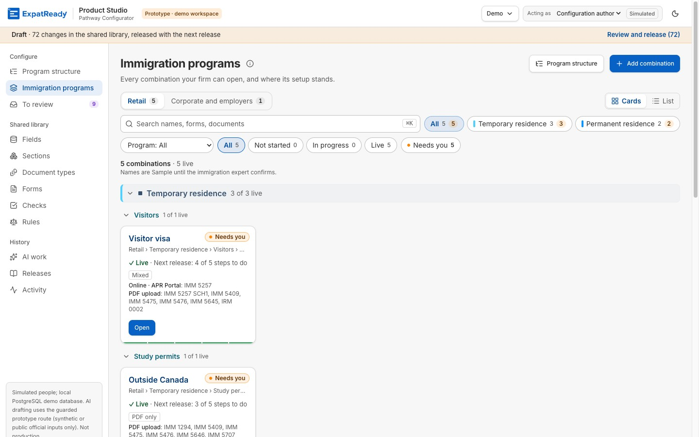
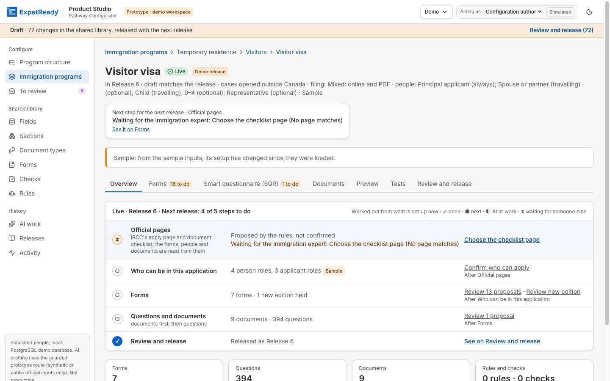
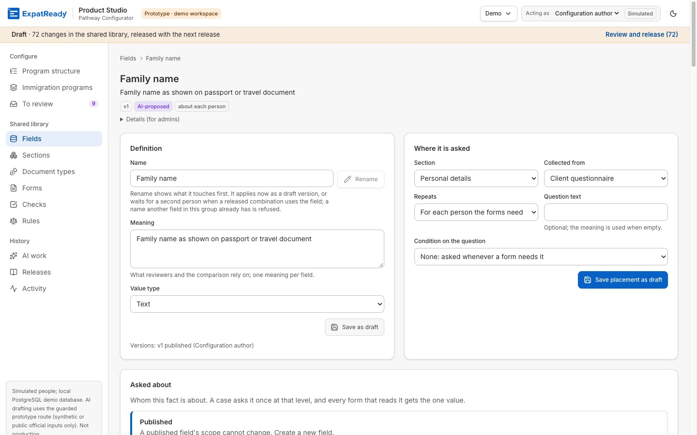
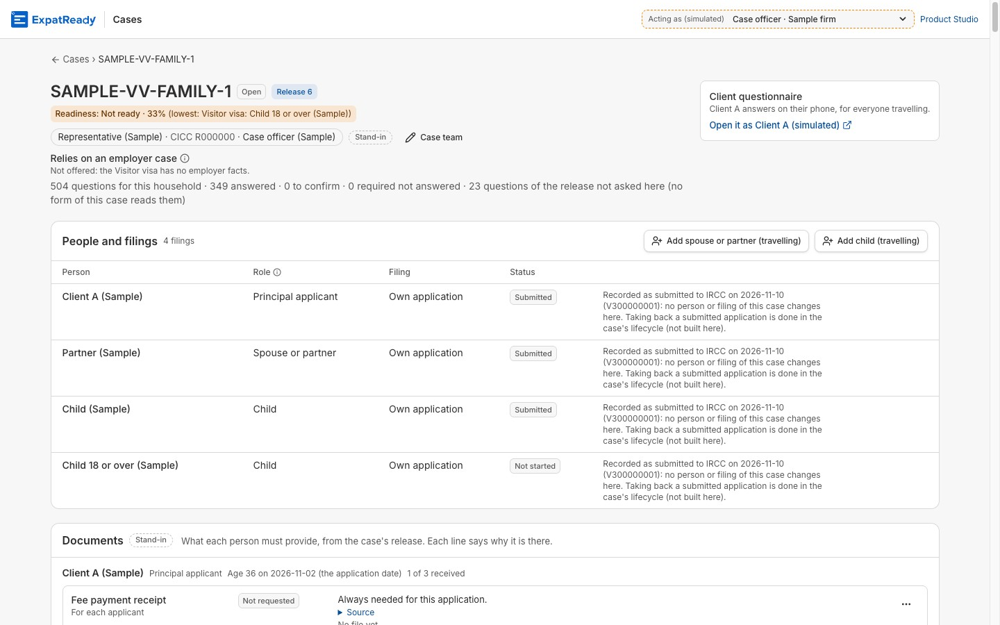
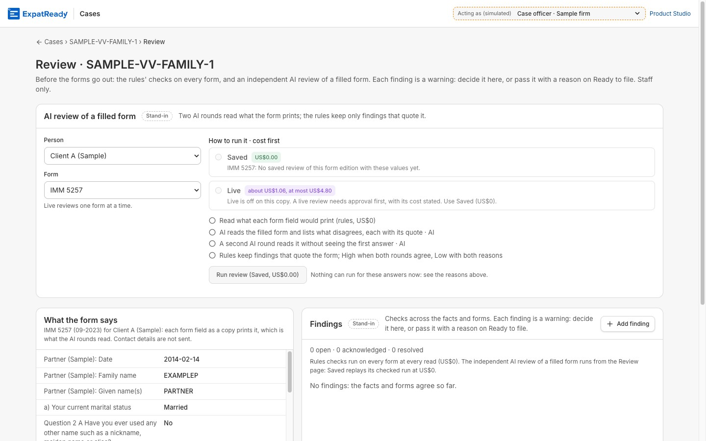

<title>Pathway Configurator Handover</title>
<meta name="claude:viewport-fit-sides" content="cover">
<link rel="stylesheet" href="https://fonts.googleapis.com/css2?family=Bricolage+Grotesque:opsz,wght@12..96,500;12..96,700&family=IBM+Plex+Mono:wght@400;500&family=IBM+Plex+Sans:wght@400;500;600&display=swap">
<style>
:root{
  --paper:#f4f6fa; --surface:#ffffff; --ink:#101a33; --ink-2:#3d4a66; --ink-3:#6b7790;
  --line:#d5dbe6; --field:#dfe8fb; --field-line:#a9bdea; --accent:#2456c9; --accent-ink:#1c479f;
  --teal:#0aa58e; --good:#0ca30c; --warn:#fab219; --serious:#ec835a; --crit:#d03b3b;
  --tint:rgba(16,26,51,.035);
}
@media (prefers-color-scheme: dark){
  :root:not([data-theme="light"]){
    --paper:#0d1322; --surface:#151c30; --ink:#e8ecf6; --ink-2:#b3bdd3; --ink-3:#8390ab;
    --line:#2a3350; --field:#1d2c52; --field-line:#3a5398; --accent:#4f7ff0; --accent-ink:#9bb8ff;
    --teal:#17a898; --good:#35c435; --warn:#fab219; --serious:#ec835a; --crit:#e56060;
    --tint:rgba(232,236,246,.045); color-scheme:dark;
  }
}
:root[data-theme="dark"]{
  --paper:#0d1322; --surface:#151c30; --ink:#e8ecf6; --ink-2:#b3bdd3; --ink-3:#8390ab;
  --line:#2a3350; --field:#1d2c52; --field-line:#3a5398; --accent:#4f7ff0; --accent-ink:#9bb8ff;
  --teal:#17a898; --good:#35c435; --warn:#fab219; --serious:#ec835a; --crit:#e56060;
  --tint:rgba(232,236,246,.045); color-scheme:dark;
}
*{box-sizing:border-box}
html{scroll-behavior:smooth;scroll-padding-top:64px}
body{margin:0;background:var(--paper);color:var(--ink);font:16px/1.55 'IBM Plex Sans',system-ui,sans-serif;-webkit-text-size-adjust:100%}
.wrap{max-width:1120px;margin:0 auto;padding-left:max(16px,env(safe-area-inset-left,0px));padding-right:max(16px,env(safe-area-inset-right,0px))}
a{color:var(--accent-ink)}
code,.mono{font-family:'IBM Plex Mono',ui-monospace,monospace;font-size:.86em}
code{background:var(--tint);padding:1px 4px;border-radius:3px;overflow-wrap:anywhere}
.dim{color:var(--ink-3)}
h1,h2,h3{font-family:'Bricolage Grotesque','IBM Plex Sans',sans-serif;margin:0;text-wrap:balance}
h1{font-size:clamp(2.1rem,5.6vw,3.7rem);line-height:1.02;letter-spacing:-.02em;font-weight:700}
h2{font-size:clamp(1.5rem,3.2vw,2.1rem);line-height:1.1;letter-spacing:-.01em;font-weight:700}
h3{font-size:1.08rem;line-height:1.25;font-weight:700}
p{margin:0 0 .7em}
ul{margin:.3em 0 0;padding-left:1.15em}
li{margin:.18em 0}
small{font-size:.82em}

/* sticky bar */
.top{position:sticky;top:env(safe-area-inset-top,0px);z-index:9;background:var(--paper);border-bottom:1px solid var(--line)}
.topin{display:flex;align-items:center;gap:18px;height:48px}
.brand{font:700 .95rem 'Bricolage Grotesque',sans-serif;color:var(--ink);text-decoration:none;white-space:nowrap}
.brand span{color:var(--ink-3);font-weight:500}
.top nav{display:flex;gap:4px;overflow-x:auto;margin-left:auto;scrollbar-width:none}
.top nav a{font-size:.84rem;color:var(--ink-2);text-decoration:none;padding:6px 10px;border-radius:4px;white-space:nowrap}
.top nav a:hover{background:var(--tint);color:var(--ink)}
.top nav b{font:500 .78rem 'IBM Plex Mono',monospace;color:var(--accent-ink);margin-right:5px}
@media (max-width:760px){html{scroll-padding-top:92px}.topin{flex-wrap:wrap;height:auto;gap:0 18px;padding-top:8px}.top nav{margin-left:-5px;width:100%;padding-bottom:4px;gap:2px}.top nav a{padding:6px 5px;font-size:.8rem}.top nav b{margin-right:4px}}

/* screens */
.screen{padding-block:44px 30px;border-bottom:1px solid var(--line)}
.kicker{font:500 .76rem 'IBM Plex Mono',monospace;letter-spacing:.06em;text-transform:uppercase;color:var(--ink-3);margin-bottom:12px}
.kicker b{color:var(--accent-ink);font-weight:500}
.lead{font-size:1.14rem;color:var(--ink-2);max-width:62ch;margin-top:16px}
.sub{color:var(--ink-2);max-width:70ch;margin-top:8px}
.verdict{display:flex;flex-wrap:wrap;gap:8px 16px;align-items:center;margin-top:18px;padding:12px 16px;background:var(--surface);border:1px solid var(--line);border-left:4px solid var(--accent);border-radius:2px;max-width:780px}
.verdict b{font-family:'Bricolage Grotesque',sans-serif}
.block{margin-top:30px}
.grid2{display:grid;grid-template-columns:minmax(0,1.5fr) minmax(0,1fr);gap:16px}
.grid2e{display:grid;grid-template-columns:repeat(2,minmax(0,1fr));gap:16px}
.grid3{display:grid;grid-template-columns:repeat(3,minmax(0,1fr));gap:16px}
@media (max-width:860px){.grid2,.grid2e,.grid3{grid-template-columns:minmax(0,1fr)}}
.card{background:var(--surface);border:1px solid var(--line);border-radius:6px;padding:18px}
.card h3{margin-bottom:4px}
.card .note{font-size:.84rem;color:var(--ink-3);margin:0}

/* form-field motif */
.fields{display:grid;grid-template-columns:repeat(auto-fit,minmax(150px,1fr));gap:10px;margin-top:22px}
.fld{background:var(--field);border:1px solid var(--field-line);border-radius:2px;padding:8px 12px 10px;min-width:0}
.fld label,.fld .lb{display:block;font:500 .68rem 'IBM Plex Mono',monospace;letter-spacing:.05em;text-transform:uppercase;color:var(--ink-2)}
.fld .v{font:700 clamp(1.7rem,3.6vw,2.3rem)/1.1 'Bricolage Grotesque',sans-serif;letter-spacing:-.01em;font-variant-numeric:tabular-nums}
.fld .n{font-size:.8rem;color:var(--ink-2);line-height:1.3;margin-top:2px}
.fields.sm .fld .v{font-size:1.5rem}
.after{font-size:.95rem;color:var(--ink-2);margin-top:10px}
.after b{color:var(--ink)}

/* reuse chart */
.legend{display:flex;flex-wrap:wrap;gap:6px 18px;font-size:.84rem;color:var(--ink-2);margin:10px 0 12px}
.sw{display:inline-block;width:11px;height:11px;border-radius:2px;margin-right:6px;vertical-align:-1px}
.sw-r,.seg-r{background:var(--accent)}
.sw-n,.seg-n{background:var(--teal)}
.crow{display:grid;grid-template-columns:185px minmax(0,1fr) 170px;gap:4px 12px;align-items:center;padding:7px 0;border-top:1px solid var(--line)}
.clab{font-size:.9rem;font-weight:500;line-height:1.25}
.clab small{display:block;color:var(--ink-3);font-weight:400}
.cbar{display:flex;gap:2px;height:16px}
.seg{position:relative;height:100%;min-width:3px;outline-offset:2px}
.seg:last-child{border-radius:0 4px 4px 0}
.seg:hover::after,.seg:focus-visible::after{content:attr(data-tip);position:absolute;bottom:calc(100% + 6px);left:50%;transform:translateX(-50%);background:var(--ink);color:var(--paper);font-size:.76rem;padding:4px 8px;border-radius:4px;white-space:nowrap;z-index:3;pointer-events:none}
.cval{font-size:.82rem;color:var(--ink-2);font-variant-numeric:tabular-nums}
.cval b{color:var(--ink);font-size:.95rem}
@media (max-width:640px){.crow{grid-template-columns:minmax(0,1fr)}.cbar{height:14px}}
.foot{font-size:.8rem;color:var(--ink-3);margin-top:10px}
details.tv{margin-top:8px;font-size:.84rem}
details.tv summary{cursor:pointer;color:var(--accent-ink)}

/* checks list */
.checks{list-style:none;padding:0;margin:12px 0 0}
.checks li{display:grid;grid-template-columns:20px 1fr;gap:8px;padding:6px 0;border-top:1px solid var(--line);font-size:.92rem}
.checks svg{width:18px;height:18px;margin-top:2px;stroke:var(--good);fill:none;stroke-width:2.4}
.checks b{font-variant-numeric:tabular-nums}
.flow3{display:grid;grid-template-columns:1fr auto 1fr auto 1fr;gap:6px;align-items:center;margin-top:12px}
.flow3 .fld{padding:6px 8px 8px}
.flow3 .fld .v{font-size:1.5rem}
.flow3 i{color:var(--ink-3);font-style:normal}

/* highlights */
.hls{display:grid;grid-template-columns:repeat(5,minmax(0,1fr));gap:0;border:1px solid var(--line);border-radius:6px;background:var(--surface);overflow:hidden}
.hl{padding:16px 16px 14px;border-left:1px solid var(--line)}
.hl:first-child{border-left:0}
.hl svg{width:26px;height:26px;stroke:var(--accent);fill:none;stroke-width:1.7;stroke-linecap:round;stroke-linejoin:round;margin-bottom:8px}
.hl h3{font-size:1rem;margin-bottom:4px}
.hl p{font-size:.87rem;color:var(--ink-2);margin:0}
.hl p b{color:var(--ink)}
@media (max-width:980px){.hls{grid-template-columns:repeat(2,minmax(0,1fr))}.hl{border-left:0;border-top:1px solid var(--line)}}
@media (max-width:560px){.hls{grid-template-columns:minmax(0,1fr)}}

/* scores */
.score{display:grid;grid-template-columns:130px 170px minmax(0,1fr);gap:6px 16px;align-items:start;padding:14px 0;border-top:1px solid var(--line)}
.score .sdet{grid-column:1/-1}
.score:first-of-type{border-top:0}
.sname{font:700 1.05rem 'Bricolage Grotesque',sans-serif}
.dots{display:flex;gap:4px;padding-top:5px}
.d{width:12px;height:12px;border-radius:50%;border:1.5px solid var(--line)}
.d.on{background:var(--accent);border-color:var(--accent)}
.d.tg{border-color:var(--accent);border-style:dashed}
.snum{font:700 1.05rem 'Bricolage Grotesque',sans-serif;font-variant-numeric:tabular-nums;white-space:nowrap}
.snum span{color:var(--ink-3);font-weight:500}
.sdet{font-size:.88rem;color:var(--ink-2)}
.sdet b{color:var(--ink)}
.sdet p{margin:0 0 3px}
@media (max-width:760px){.score{grid-template-columns:1fr auto}.sdet{grid-column:1/-1}.dots{grid-column:1/-1;grid-row:2}}

/* caveat strip */
.caveat{border:1.5px dashed var(--ink-3);border-radius:6px;padding:16px 18px;background:var(--surface)}
.caveat h3{display:flex;align-items:center;gap:8px;margin-bottom:8px}
.caveat h3 svg{width:20px;height:20px;stroke:var(--serious);fill:none;stroke-width:2}
.caveat ul{columns:2;column-gap:32px;font-size:.92rem;color:var(--ink-2);padding-left:1.1em;margin:0}
.caveat li{break-inside:avoid;margin:0 0 6px}
.caveat li b{color:var(--ink)}
@media (max-width:760px){.caveat ul{columns:1}}

/* figures */
figure{margin:0}
.fig{background:var(--surface);border:1px solid var(--line);border-radius:6px;padding:16px 18px 14px}
.figw{overflow-x:auto;margin:8px -4px 4px}
.figw svg{display:block;width:100%;height:auto;min-width:720px}
.figw.narrow svg{min-width:560px}
.fsp{display:grid;grid-template-columns:minmax(0,1.5fr) minmax(0,1fr);gap:8px 32px;align-items:center}
.fsb figcaption{margin-top:0}
@media (max-width:1020px){.fsp{grid-template-columns:minmax(0,1fr)}}
figcaption{font-size:.84rem;color:var(--ink-3);margin-top:4px}
.fig h3 .tag,.tag{display:inline-block;font:500 .68rem 'IBM Plex Mono',monospace;letter-spacing:.04em;text-transform:uppercase;border:1px solid var(--ink-3);color:var(--ink-2);border-radius:3px;padding:1px 6px;margin-left:8px;vertical-align:2px;white-space:nowrap}
.pts{font-size:.9rem;color:var(--ink-2);margin-top:8px}
.pts b{color:var(--ink)}
svg text{font-family:'IBM Plex Sans',sans-serif}
.bx{fill:var(--surface);stroke:var(--ink-3);stroke-width:1.1}
.bx-a{fill:var(--field);stroke:var(--accent);stroke-width:1.5}
.bx-d{fill:none;stroke:var(--ink-3);stroke-width:1.2;stroke-dasharray:5 4}
.bx-l{fill:var(--tint);stroke:none}
.t{fill:var(--ink);font-size:13px;font-weight:600}
.s{fill:var(--ink-2);font-size:11.5px}
.m{fill:var(--ink-3);font-size:11px;font-family:'IBM Plex Mono',monospace}
.ma{fill:var(--accent-ink);font-size:11px;font-family:'IBM Plex Mono',monospace;font-weight:500}
.ar{stroke:var(--ink-3);stroke-width:1.4;fill:none}
.ar-a{stroke:var(--accent);stroke-width:1.6;fill:none}
.ah{fill:var(--ink-3)}
.ah-a{fill:var(--accent)}
.fan{stroke:var(--accent);stroke-width:1;fill:none;opacity:.55}
.sq{fill:var(--accent)}

/* screenshots */
.shots{display:grid;grid-template-columns:repeat(2,minmax(0,1fr));gap:16px}
@media (max-width:760px){.shots{grid-template-columns:minmax(0,1fr)}}
.shot a{display:block;border:1px solid var(--line);border-radius:6px;overflow:hidden;background:var(--surface)}
.shot img{display:block;width:100%;height:auto}
.shot figcaption{margin-top:6px}
.shot figcaption b{color:var(--ink)}

/* tables */
.tw{overflow-x:auto;border:1px solid var(--line);border-radius:6px;background:var(--surface)}
table{border-collapse:collapse;width:100%;font-size:.88rem}
th,td{text-align:left;vertical-align:top;padding:8px 12px;border-top:1px solid var(--line)}
thead th{border-top:0;font:500 .72rem 'IBM Plex Mono',monospace;letter-spacing:.04em;text-transform:uppercase;color:var(--ink-3);background:var(--tint);white-space:nowrap}
td.num,th.num{text-align:right;font-variant-numeric:tabular-nums;white-space:nowrap}
td.nw{white-space:nowrap}
tbody th{font-weight:600}
.cmp{min-width:860px}
.cmp td:last-child,.cmp th:last-child{background:var(--field)}
.ahead{display:inline-block;font:500 .66rem 'IBM Plex Mono',monospace;text-transform:uppercase;letter-spacing:.04em;border:1px solid var(--ink-3);border-radius:3px;padding:0 5px;color:var(--ink-2);white-space:nowrap}

/* status pills */
.st{white-space:nowrap;font-weight:500}
.st::before{display:inline-block;margin-right:5px;font-size:.9em}
.st-works::before{content:"●";color:var(--good)}
.st-partial::before{content:"◐";color:var(--warn)}
.st-notbuilt::before{content:"○";color:var(--ink-3)}

/* M3 meter */
.meter{display:grid;grid-template-columns:repeat(29,minmax(0,1fr));gap:2px;margin:12px 0 6px;max-width:560px}
.meter i{height:18px;border-radius:2px;background:var(--accent)}
.meter i.p{background:none;border:1.5px solid var(--warn)}
.meter i.n{background:none;border:1.5px dashed var(--ink-3)}
.big{font:700 2.4rem/1 'Bricolage Grotesque',sans-serif;font-variant-numeric:tabular-nums}
.big span{font-size:1.1rem;color:var(--ink-3);font-weight:500}

/* tracks and asks */
.trk h3 .tag{margin-left:0;margin-right:8px}
.trk ul{font-size:.9rem;color:var(--ink-2)}
.ask{position:relative;padding-top:20px}
.ask .no{font:700 2.2rem/1 'Bricolage Grotesque',sans-serif;color:var(--accent-ink)}
.ask h3{margin:6px 0 4px}
.ask p{font-size:.9rem;color:var(--ink-2)}
.ask .size{display:flex;flex-wrap:wrap;gap:6px;margin-top:10px}
.chip{display:inline-block;font:500 .72rem 'IBM Plex Mono',monospace;background:var(--field);border:1px solid var(--field-line);border-radius:2px;padding:2px 7px;color:var(--ink)}
.never{display:flex;flex-wrap:wrap;gap:6px;align-items:center;margin-top:10px;font-size:.84rem;color:var(--ink-2)}
.never .chip{background:none;border-color:var(--crit);text-decoration:line-through;text-decoration-color:var(--crit)}

/* appendix */
.apx{padding-block:44px 60px}
details.ap{background:var(--surface);border:1px solid var(--line);border-radius:6px;margin-top:10px}
details.ap>summary{cursor:pointer;list-style:none;display:flex;align-items:baseline;gap:12px;padding:14px 18px}
details.ap>summary::-webkit-details-marker{display:none}
details.ap>summary .l{font:700 1.05rem 'IBM Plex Mono',monospace;color:var(--accent-ink);width:1.2em;flex:none}
details.ap>summary .h{font:700 1.08rem 'Bricolage Grotesque',sans-serif}
details.ap>summary .x{font-size:.84rem;color:var(--ink-3);margin-left:auto;text-align:right}
details.ap>summary::after{content:"+";font:500 1.1rem 'IBM Plex Mono',monospace;color:var(--ink-3);flex:none}
details.ap[open]>summary::after{content:"−"}
details.ap[open]>summary{border-bottom:1px solid var(--line)}
.apb{padding:16px 18px 20px}
.apb h3{margin:20px 0 8px}
.apb h3:first-child{margin-top:0}
.apb p,.apb li{font-size:.92rem;color:var(--ink-2)}
.apb p b,.apb li b{color:var(--ink)}
@media (max-width:640px){details.ap>summary .x{display:none}}
.btn{font:500 .8rem 'IBM Plex Sans',sans-serif;background:var(--surface);color:var(--ink);border:1px solid var(--line);border-radius:4px;padding:5px 10px;cursor:pointer}
.btn[aria-pressed="true"]{background:var(--ink);color:var(--paper);border-color:var(--ink)}
.filters{display:flex;flex-wrap:wrap;gap:6px;align-items:center;margin:6px 0}
.filters span{font:500 .7rem 'IBM Plex Mono',monospace;text-transform:uppercase;color:var(--ink-3);width:64px}
#caps{min-width:780px}
#caps td:nth-child(3){min-width:320px}
.gcell{width:38%;min-width:140px}
.gbar{display:flex;gap:2px;height:12px}
.gseg{height:100%;border-radius:1px;min-width:3px}
.g-works{background:var(--accent)}
.g-partial{background:none;border:1.5px solid var(--warn)}
.g-notbuilt{background:none;border:1.5px dashed var(--ink-3)}
pre{background:var(--tint);border:1px solid var(--line);border-radius:4px;padding:10px 12px;overflow-x:auto;font:400 .82rem/1.5 'IBM Plex Mono',monospace;margin:6px 0 10px}
ol.steps{padding-left:0;list-style:none;counter-reset:s;margin:0}
ol.steps>li{counter-increment:s;display:grid;grid-template-columns:34px 1fr;gap:10px;padding:10px 0;border-top:1px solid var(--line)}
ol.steps>li::before{content:counter(s);font:700 1.1rem 'Bricolage Grotesque',sans-serif;color:var(--accent-ink);background:var(--field);border:1px solid var(--field-line);border-radius:2px;width:30px;height:30px;display:grid;place-items:center}
ol.steps .min{font:500 .72rem 'IBM Plex Mono',monospace;color:var(--ink-3);margin-left:6px}
.tl{list-style:none;padding:0;margin:0;border-left:2px solid var(--line)}
.tl li{position:relative;padding:0 0 14px 18px;margin:0}
.tl li::before{content:"";position:absolute;left:-6px;top:6px;width:10px;height:10px;border-radius:50%;background:var(--surface);border:2px solid var(--accent)}
.tl time{font:500 .78rem 'IBM Plex Mono',monospace;color:var(--accent-ink);display:block}
dl.gl{display:grid;grid-template-columns:220px minmax(0,1fr);gap:0;margin:0;font-size:.9rem}
dl.gl dt{font-weight:600;padding:7px 12px 7px 0;border-top:1px solid var(--line)}
dl.gl dd{margin:0;padding:7px 0;border-top:1px solid var(--line);color:var(--ink-2)}
@media (max-width:640px){dl.gl{grid-template-columns:1fr}dl.gl dd{border-top:0;padding-top:0}}
.src{font-size:.8rem;color:var(--ink-3);overflow-wrap:anywhere}
footer{padding-block:20px 50px;font-size:.82rem;color:var(--ink-3)}
</style>
<header class="top">
  <div class="wrap topin">
    <a class="brand" href="#verdict">Pathway Configurator <span>· Handover</span></a>
    <nav aria-label="Sections">
      <a href="#verdict"><b>1</b>Verdict</a>
      <a href="#how"><b>2</b>How it works</a>
      <a href="#left"><b>3</b>What is left</a>
      <a href="#appendix"><b>A–J</b>Appendix</a>
    </nav>
  </div>
</header>

<main>
<!-- ================= SCREEN 1 ================= -->
<section class="screen" id="verdict">
<div class="wrap">
  <div class="kicker"><b>1 · The verdict</b> &nbsp;·&nbsp; Handover for the co-founder &nbsp;·&nbsp; 10 Nov 2026</div>
  <h1>One fact, entered once, fills every form.</h1>
  <p class="lead">The Pathway Configurator reference build turns an immigration pathway into data. A content publisher sets a pathway up once. After that, every case is asked each fact once, and its government forms are filled, read back and checked.</p>
  <div class="verdict">
    <span><b>Verdict:</b> the engine is proven end to end on one pathway (Visitor visa, a family of four) and configured on four more.</span>
    <span><b>Recommendation:</b> fund M4. <a href="#asks">See the three asks</a></span>
  </div>

  <div class="fields" aria-label="Headline numbers">
    <div class="fld"><span class="lb">Facts in the library</span><div class="v">366</div><div class="n">each defined once</div></div>
    <div class="fld"><span class="lb">Form boxes they fill</span><div class="v">1,728</div><div class="n">mapped and published</div></div>
    <div class="fld"><span class="lb">Boxes per fact</span><div class="v">4.7</div><div class="n">on average</div></div>
    <div class="fld"><span class="lb">IRCC forms</span><div class="v">19</div><div class="n">real PDFs, mapped box by box</div></div>
    <div class="fld"><span class="lb">Pathways</span><div class="v">5</div><div class="n">configured with forms</div></div>
  </div>
  <p class="after">A third of the facts (<b>122 of 366</b>) sit on two or more forms, and those fill <b>72% of all boxes</b> (1,244 of 1,728). Status as of <code>main 66e74115e</code>, 10 Nov 2026 10:06 IST. All immigration content is <b>Sample</b>.</p>

  <div class="block grid2">
    <div class="card">
      <h3>Each new pathway starts with most of its facts already in the library</h3>
      <p class="note">Facts each pathway needs: reused from the library, or new. Published field maps in the demo data, counted 10 Nov 2026.</p>
      <div class="legend"><span><i class="sw sw-r"></i>Reused from the library</span><span><i class="sw sw-n"></i>New facts added</span></div>
      <div class="chart">
        <div class="crow"><div class="clab">1 · Visitor visa<small>7 forms</small></div>
          <div class="cbar"><span class="seg seg-n" tabindex="0" style="width:76.4%" data-tip="Visitor visa: 159 new facts"></span></div>
          <div class="cval"><b>first pathway</b><br>159 new</div></div>
        <div class="crow"><div class="clab">2 · Work permit with an LMIA<small>inside Canada · 5 forms</small></div>
          <div class="cbar"><span class="seg seg-r" tabindex="0" style="width:45.2%" data-tip="Work permit: 94 facts reused"></span><span class="seg seg-n" tabindex="0" style="width:19.2%" data-tip="Work permit: 40 new facts"></span></div>
          <div class="cval"><b>70% reused</b><br>94 reused + 40 new</div></div>
        <div class="crow"><div class="clab">3 · Study permit<small>outside Canada · 6 forms</small></div>
          <div class="cbar"><span class="seg seg-r" tabindex="0" style="width:51.4%" data-tip="Study permit: 107 facts reused"></span><span class="seg seg-n" tabindex="0" style="width:14.9%" data-tip="Study permit: 31 new facts"></span></div>
          <div class="cval"><b>78% reused</b><br>107 reused + 31 new</div></div>
        <div class="crow"><div class="clab">4 · Provincial nominee<small>Express Entry stream · 6 forms</small></div>
          <div class="cbar"><span class="seg seg-r" tabindex="0" style="width:39.9%" data-tip="Provincial nominee: 83 facts reused"></span><span class="seg seg-n" tabindex="0" style="width:45.2%" data-tip="Provincial nominee: 94 new facts"></span></div>
          <div class="cval"><b>47% reused</b><br>83 reused + 94 new</div></div>
        <div class="crow"><div class="clab">5 · Spouse or partner sponsorship<small>8 forms</small></div>
          <div class="cbar"><span class="seg seg-r" tabindex="0" style="width:79.8%" data-tip="Spouse sponsorship: 166 facts reused"></span><span class="seg seg-n" tabindex="0" style="width:20.2%" data-tip="Spouse sponsorship: 42 new facts"></span></div>
          <div class="cval"><b>80% reused</b><br>166 reused + 42 new</div></div>
      </div>
      <details class="tv"><summary>View as table</summary>
        <div class="tw" style="margin-top:8px"><table>
          <thead><tr><th>Pathway</th><th class="num">Forms</th><th class="num">Facts needed</th><th class="num">Reused</th><th class="num">New</th><th class="num">Reused %</th></tr></thead>
          <tbody>
            <tr><td>Visitor visa</td><td class="num">7</td><td class="num">159</td><td class="num">0</td><td class="num">159</td><td class="num">0%</td></tr>
            <tr><td>Work permit with an LMIA, inside Canada</td><td class="num">5</td><td class="num">134</td><td class="num">94</td><td class="num">40</td><td class="num">70%</td></tr>
            <tr><td>Study permit, outside Canada</td><td class="num">6</td><td class="num">138</td><td class="num">107</td><td class="num">31</td><td class="num">78%</td></tr>
            <tr><td>Provincial nominee, Express Entry stream</td><td class="num">6</td><td class="num">177</td><td class="num">83</td><td class="num">94</td><td class="num">47%</td></tr>
            <tr><td>Spouse or partner sponsorship</td><td class="num">8</td><td class="num">208</td><td class="num">166</td><td class="num">42</td><td class="num">80%</td></tr>
          </tbody></table></div>
      </details>
      <p class="foot">The order is the analyst's, not the recorded build order: another order changes each row, not the total of 366. Provincial nominee is the first permanent-residence pathway, so it adds the most. <b>Time to configure a pathway has not been measured.</b></p>
    </div>

    <div class="card">
      <h3>One family, one pass</h3>
      <p class="note">Visitor visa, family of four. Sample case SAMPLE-VV-FAMILY-1 in the demo.</p>
      <div class="flow3">
        <div class="fld"><span class="lb">Answers</span><div class="v">292</div></div><i>→</i>
        <div class="fld"><span class="lb">Boxes written</span><div class="v">562</div></div><i>→</i>
        <div class="fld"><span class="lb">Forms</span><div class="v">24</div></div>
      </div>
      <ul class="checks">
        <li><svg viewBox="0 0 24 24"><path d="M5 12.5l4.5 4.5L19 7.5"/></svg><span><b>562 of 562</b> boxes read back equal to what was written</span></li>
        <li><svg viewBox="0 0 24 24"><path d="M5 12.5l4.5 4.5L19 7.5"/></svg><span><b>24 of 24</b> forms keep IRCC's built-in signatures valid</span></li>
        <li><svg viewBox="0 0 24 24"><path d="M5 12.5l4.5 4.5L19 7.5"/></svg><span><b>760</b> boxes left empty on purpose, by rule</span></li>
        <li><svg viewBox="0 0 24 24"><path d="M5 12.5l4.5 4.5L19 7.5"/></svg><span><b>25</b> boxes left for a hand signature. The product never signs.</span></li>
      </ul>
      <p class="foot">Each answer is used 1.9 times on average inside this one case; across pathways the same facts are reused again (chart on the left).</p>
    </div>
  </div>

  <div class="block">
    <div class="hls">
      <div class="hl">
        <svg viewBox="0 0 24 24"><path d="M4 7h10M18 7h2M4 17h4M12 17h8"/><circle cx="16" cy="7" r="2"/><circle cx="10" cy="17" r="2"/></svg>
        <h3>Configured, not coded</h3>
        <p>Forms, questions, documents and rules of a pathway are set in screens and frozen into a release that a second person approves. <b>93 of 112 capabilities Works.</b></p>
      </div>
      <div class="hl">
        <svg viewBox="0 0 24 24"><rect x="3" y="7" width="18" height="10" rx="1.5"/><path d="M7 10v4M11 14h6"/></svg>
        <h3>Asked once</h3>
        <p>One answer per person per fact, never overwritten. It fills every box mapped to that fact, on every form, for every pathway.</p>
      </div>
      <div class="hl">
        <svg viewBox="0 0 24 24"><path d="M7 3h7l4 4v14H7z"/><path d="M14 3v4h4"/><path d="M9.5 14l2 2 3.5-4"/></svg>
        <h3>Fills real IRCC PDFs, and proves it</h3>
        <p>Writes IRCC's own PDF forms (the XFA kind), reads every box back and checks the signatures. <b>The team's build refuses XFA forms</b> (28 Oct capture).</p>
      </div>
      <div class="hl">
        <svg viewBox="0 0 24 24"><path d="M11 3l1.8 5.2L18 10l-5.2 1.8L11 17l-1.8-5.2L4 10l5.2-1.8z"/><path d="M19 15v5M16.5 17.5h5"/></svg>
        <h3>AI drafts, people decide</h3>
        <p>AI maps form boxes and drafts questions; a person approves each one. Every paid run shows its price first. Product AI spend so far: <b>US$82.65</b> over 136 calls.</p>
      </div>
      <div class="hl">
        <svg viewBox="0 0 24 24"><circle cx="6" cy="6" r="2"/><circle cx="6" cy="18" r="2"/><circle cx="18" cy="12" r="2"/><path d="M6 8v8M8 6c5 0 4 6 8 6"/></svg>
        <h3>Built by an AI delivery line</h3>
        <p><b>791 merged pull requests</b> in about three weeks. Only an independent QA lane may mark a capability Works, after its own re-run.</p>
      </div>
    </div>
  </div>

  <div class="block grid2">
    <div class="card">
      <h3>How configurable, flexible and scalable is it?</h3>
      <p class="note">Independent audit of the code, 10 Nov 2026. Score out of 10: filled = today, dashed = target after M4. Evidence in <a href="#ap-e">appendix E</a>.</p>
      <div style="margin-top:8px">
        <div class="score">
          <div class="sname">Configurable</div>
          <div class="dots" role="img" aria-label="6 of 10 today, target 8"><i class="d on"></i><i class="d on"></i><i class="d on"></i><i class="d on"></i><i class="d on"></i><i class="d on"></i><i class="d tg"></i><i class="d tg"></i><i class="d"></i><i class="d"></i></div>
          <div class="snum">6 <span>→ 8</span></div>
          <div class="sdet"><p><b>Held back by:</b> seven rule tables (fees, box gates, roles and more) live in files, outside the screens and the release.</p><p><b>Lift:</b> move them into library screens, frozen in the release.</p></div>
        </div>
        <div class="score">
          <div class="sname">Flexible</div>
          <div class="dots" role="img" aria-label="5 of 10 today, target 8"><i class="d on"></i><i class="d on"></i><i class="d on"></i><i class="d on"></i><i class="d on"></i><i class="d tg"></i><i class="d tg"></i><i class="d tg"></i><i class="d"></i><i class="d"></i></div>
          <div class="snum">5 <span>→ 8</span></div>
          <div class="sdet"><p><b>Held back by:</b> the case side has Visitor-visa-only guards and a fixed family shape.</p><p><b>Lift:</b> five general mechanisms, then delete the guards.</p></div>
        </div>
        <div class="score">
          <div class="sname">Scalable</div>
          <div class="dots" role="img" aria-label="5 of 10 today, target 8"><i class="d on"></i><i class="d on"></i><i class="d on"></i><i class="d on"></i><i class="d on"></i><i class="d tg"></i><i class="d tg"></i><i class="d tg"></i><i class="d"></i><i class="d"></i></div>
          <div class="snum">5 <span>→ 8</span></div>
          <div class="sdet"><p><b>Held back by:</b> one PDF process per form, an in-memory queue, local disk, no load test.</p><p><b>Lift:</b> durable job queue, object storage, a cache, a measured run at 1,000 cases.</p></div>
        </div>
      </div>
      <p class="foot"><b>Acid test:</b> a full Study permit case tomorrow needs 7 screen steps by a content publisher plus 5 to 8 repository edits by an engineer. The target is zero edits.</p>
    </div>

    <div class="caveat">
      <h3><svg viewBox="0 0 24 24"><path d="M12 4l9 16H3z"/><path d="M12 10v5M12 17.5v.5"/></svg>Not yet proven</h3>
      <ul style="columns:1">
        <li><b>Content is Sample.</b> No immigration expert has confirmed it; no answer key is signed.</li>
        <li><b>Adobe Validate has not passed</b> on a complete form filled by the app (capability C7.2 is Partial).</li>
        <li><b>Only Visitor visa runs a full case.</b> On other pathways fees, checklists and linked applications still need code.</li>
        <li><b>No real users, hosted environment or load test.</b> Tenancy, sign-in and hosting are the team platform's.</li>
        <li><b>Legal points are "Unconfirmed: no counsel"</b>, including whether IRCC's terms allow a portal extension.</li>
      </ul>
    </div>
  </div>
</div>
</section>

<!-- ================= SCREEN 2 ================= -->
<section class="screen" id="how">
<div class="wrap">
  <div class="kicker"><b>2 · How it works</b></div>
  <h2>Set up once. Ask once. The rules fill every box.</h2>
  <p class="sub">Four pictures: the business flow, one fact fanning out, the technical parts, and the Chrome extension planned for M4. Then four real screens.</p>

  <div class="block">
    <figure class="fig">
      <h3>Figure 1 · The flow, from set-up to filing</h3>
      <div class="figw">
        <svg viewBox="0 0 1000 318" role="img" aria-label="Two lanes. Set up once per pathway: structure and sources, shared library, questionnaire and documents, release. Every case: open a case pinned to one release, ask once, render, fill and read back, review and file.">
          <defs>
            <marker id="f1a" viewBox="0 0 10 10" refX="9" refY="5" markerWidth="7" markerHeight="7" orient="auto"><path d="M0 0L10 5L0 10z" class="ah"/></marker>
            <marker id="f1b" viewBox="0 0 10 10" refX="9" refY="5" markerWidth="7" markerHeight="7" orient="auto"><path d="M0 0L10 5L0 10z" class="ah-a"/></marker>
          </defs>
          <rect class="bx-l" x="0" y="0" width="1000" height="140" rx="6"/>
          <text class="m" x="16" y="24">SET UP ONCE PER PATHWAY · content publisher builds, a second person approves</text>
          <rect class="bx" x="54" y="40" width="200" height="86" rx="4"/>
          <text class="t" x="68" y="63">Structure and sources</text>
          <text class="s" x="68" y="83">Program tree, official pages,</text>
          <text class="s" x="68" y="99">blank IRCC forms loaded</text>
          <rect class="bx" x="284" y="40" width="200" height="86" rx="4"/>
          <text class="t" x="298" y="63">Shared library</text>
          <text class="s" x="298" y="83">Each form box mapped to one</text>
          <text class="s" x="298" y="99">fact, defined once, reused</text>
          <text class="ma" x="298" y="116">AI drafts · person approves</text>
          <rect class="bx" x="514" y="40" width="200" height="86" rx="4"/>
          <text class="t" x="528" y="63">Questionnaire and documents</text>
          <text class="s" x="528" y="83">Questions, sections, rules,</text>
          <text class="s" x="528" y="99">document checklist</text>
          <text class="ma" x="528" y="116">AI drafts · person approves</text>
          <rect class="bx-a" x="744" y="40" width="200" height="86" rx="4"/>
          <text class="t" x="758" y="63">Release</text>
          <text class="s" x="758" y="83">Frozen and fingerprinted;</text>
          <text class="s" x="758" y="99">the maker cannot release</text>
          <text class="s" x="758" y="115">their own work</text>
          <path class="ar" d="M254 83H282" marker-end="url(#f1a)"/>
          <path class="ar" d="M484 83H512" marker-end="url(#f1a)"/>
          <path class="ar" d="M714 83H742" marker-end="url(#f1a)"/>

          <path class="ar-a" d="M844 126V159H136V214" marker-end="url(#f1b)"/>
          <text class="ma" x="490" y="154" text-anchor="middle">each case is pinned to one release</text>

          <rect class="bx-l" x="0" y="178" width="1000" height="140" rx="6"/>
          <text class="m" x="230" y="200">EVERY CASE · case officer, client, representative</text>
          <rect class="bx" x="54" y="216" width="164" height="86" rx="4"/>
          <text class="t" x="66" y="239">Open a case</text>
          <text class="s" x="66" y="259">Pinned to one release;</text>
          <text class="s" x="66" y="275">people added</text>
          <rect class="bx" x="236" y="216" width="164" height="86" rx="4"/>
          <text class="t" x="248" y="239">Ask once</text>
          <text class="s" x="248" y="259">One answer per person</text>
          <text class="s" x="248" y="275">per fact, never overwritten</text>
          <rect class="bx-a" x="418" y="216" width="164" height="86" rx="4"/>
          <text class="t" x="430" y="239">Render</text>
          <text class="s" x="430" y="259">Rules decide every box:</text>
          <text class="s" x="430" y="275">fill, leave empty, by hand</text>
          <rect class="bx" x="600" y="216" width="164" height="86" rx="4"/>
          <text class="t" x="612" y="239">Fill and read back</text>
          <text class="s" x="612" y="259">Real IRCC PDF; written =</text>
          <text class="s" x="612" y="275">read; signatures intact</text>
          <rect class="bx" x="782" y="216" width="164" height="86" rx="4"/>
          <text class="t" x="794" y="239">Review and file</text>
          <text class="s" x="794" y="259">Checks run; a person</text>
          <text class="s" x="794" y="275">signs and submits</text>
          <path class="ar" d="M218 259H234" marker-end="url(#f1a)"/>
          <path class="ar" d="M400 259H416" marker-end="url(#f1a)"/>
          <path class="ar" d="M582 259H598" marker-end="url(#f1a)"/>
          <path class="ar" d="M764 259H780" marker-end="url(#f1a)"/>
        </svg>
      </div>
      <figcaption>Blue boxes are the two points that make it safe: nothing reaches a case until it is released, and no person picks a form box by hand.</figcaption>
      <ul class="pts">
        <li><b>Set-up is paid once per pathway.</b> AI drafts the box-to-fact maps and the questions; a person approves each one.</li>
        <li><b>A release is a frozen copy.</b> Open cases stay on the release they started on; a new release never changes them silently.</li>
        <li><b>On a case, rules decide every box</b> from the answers, and the writer proves what it wrote by reading it back.</li>
      </ul>
    </figure>
  </div>

  <div class="block">
    <figure class="fig">
      <h3>Figure 2 · One fact, many boxes</h3>
      <div class="fsp">
      <div class="figw narrow">
<svg viewBox="0 0 700 400" role="img" aria-label="Family name is asked once per person, stored as one fact, and fills 43 boxes on 15 IRCC forms.">
<defs><marker id="f2a" viewBox="0 0 10 10" refX="9" refY="5" markerWidth="7" markerHeight="7" orient="auto"><path d="M0 0L10 5L0 10z" class="ah"/></marker></defs>
<rect class="bx" x="10" y="160" width="150" height="80" rx="4"/>
<text class="t" x="22" y="185">Family name</text>
<text class="s" x="22" y="205">asked once</text>
<text class="s" x="22" y="221">per person</text>
<path class="ar" d="M160 200H213" marker-end="url(#f2a)"/>
<text class="m" x="187" y="192" text-anchor="middle">saved</text>
<rect class="bx-a" x="215" y="160" width="170" height="80" rx="4"/>
<text class="ma" x="227" y="185">person.family_name</text>
<text class="s" x="227" y="205">one fact in the</text>
<text class="s" x="227" y="221">shared library</text>
<path class="fan" d="M385 200C425 200 425 24 462 24"/>
<text class="s" x="468" y="28">IMM 5406</text>
<rect class="sq" x="578" y="19" width="10" height="10" rx="1.5"/>
<rect class="sq" x="591" y="19" width="10" height="10" rx="1.5"/>
<rect class="sq" x="604" y="19" width="10" height="10" rx="1.5"/>
<rect class="sq" x="617" y="19" width="10" height="10" rx="1.5"/>
<rect class="sq" x="630" y="19" width="10" height="10" rx="1.5"/>
<rect class="sq" x="643" y="19" width="10" height="10" rx="1.5"/>
<text class="m" x="690" y="28" text-anchor="end">6</text>
<path class="fan" d="M385 200C425 200 425 49 462 49"/>
<text class="s" x="468" y="53">IMM 0008</text>
<rect class="sq" x="578" y="44" width="10" height="10" rx="1.5"/>
<rect class="sq" x="591" y="44" width="10" height="10" rx="1.5"/>
<rect class="sq" x="604" y="44" width="10" height="10" rx="1.5"/>
<rect class="sq" x="617" y="44" width="10" height="10" rx="1.5"/>
<rect class="sq" x="630" y="44" width="10" height="10" rx="1.5"/>
<text class="m" x="690" y="53" text-anchor="end">5</text>
<path class="fan" d="M385 200C425 200 425 74 462 74"/>
<text class="s" x="468" y="78">IMM 5707</text>
<rect class="sq" x="578" y="69" width="10" height="10" rx="1.5"/>
<rect class="sq" x="591" y="69" width="10" height="10" rx="1.5"/>
<rect class="sq" x="604" y="69" width="10" height="10" rx="1.5"/>
<rect class="sq" x="617" y="69" width="10" height="10" rx="1.5"/>
<rect class="sq" x="630" y="69" width="10" height="10" rx="1.5"/>
<text class="m" x="690" y="78" text-anchor="end">5</text>
<path class="fan" d="M385 200C425 200 425 99 462 99"/>
<text class="s" x="468" y="103">IMM 1344</text>
<rect class="sq" x="578" y="94" width="10" height="10" rx="1.5"/>
<rect class="sq" x="591" y="94" width="10" height="10" rx="1.5"/>
<rect class="sq" x="604" y="94" width="10" height="10" rx="1.5"/>
<rect class="sq" x="617" y="94" width="10" height="10" rx="1.5"/>
<text class="m" x="690" y="103" text-anchor="end">4</text>
<path class="fan" d="M385 200C425 200 425 124 462 124"/>
<text class="s" x="468" y="128">IMM 5646</text>
<rect class="sq" x="578" y="119" width="10" height="10" rx="1.5"/>
<rect class="sq" x="591" y="119" width="10" height="10" rx="1.5"/>
<rect class="sq" x="604" y="119" width="10" height="10" rx="1.5"/>
<rect class="sq" x="617" y="119" width="10" height="10" rx="1.5"/>
<text class="m" x="690" y="128" text-anchor="end">4</text>
<path class="fan" d="M385 200C425 200 425 149 462 149"/>
<text class="s" x="468" y="153">IMM 5562</text>
<rect class="sq" x="578" y="144" width="10" height="10" rx="1.5"/>
<rect class="sq" x="591" y="144" width="10" height="10" rx="1.5"/>
<rect class="sq" x="604" y="144" width="10" height="10" rx="1.5"/>
<text class="m" x="690" y="153" text-anchor="end">3</text>
<path class="fan" d="M385 200C425 200 425 174 462 174"/>
<text class="s" x="468" y="178">IMM 0008 DEP</text>
<rect class="sq" x="578" y="169" width="10" height="10" rx="1.5"/>
<rect class="sq" x="591" y="169" width="10" height="10" rx="1.5"/>
<text class="m" x="690" y="178" text-anchor="end">2</text>
<path class="fan" d="M385 200C425 200 425 199 462 199"/>
<text class="s" x="468" y="203">IMM 1294</text>
<rect class="sq" x="578" y="194" width="10" height="10" rx="1.5"/>
<rect class="sq" x="591" y="194" width="10" height="10" rx="1.5"/>
<text class="m" x="690" y="203" text-anchor="end">2</text>
<path class="fan" d="M385 200C425 200 425 224 462 224"/>
<text class="s" x="468" y="228">IMM 5257</text>
<rect class="sq" x="578" y="219" width="10" height="10" rx="1.5"/>
<rect class="sq" x="591" y="219" width="10" height="10" rx="1.5"/>
<text class="m" x="690" y="228" text-anchor="end">2</text>
<path class="fan" d="M385 200C425 200 425 249 462 249"/>
<text class="s" x="468" y="253">IMM 5476</text>
<rect class="sq" x="578" y="244" width="10" height="10" rx="1.5"/>
<rect class="sq" x="591" y="244" width="10" height="10" rx="1.5"/>
<text class="m" x="690" y="253" text-anchor="end">2</text>
<path class="fan" d="M385 200C425 200 425 274 462 274"/>
<text class="s" x="468" y="278">IMM 5532</text>
<rect class="sq" x="578" y="269" width="10" height="10" rx="1.5"/>
<rect class="sq" x="591" y="269" width="10" height="10" rx="1.5"/>
<text class="m" x="690" y="278" text-anchor="end">2</text>
<path class="fan" d="M385 200C425 200 425 299 462 299"/>
<text class="s" x="468" y="303">IMM 5669</text>
<rect class="sq" x="578" y="294" width="10" height="10" rx="1.5"/>
<rect class="sq" x="591" y="294" width="10" height="10" rx="1.5"/>
<text class="m" x="690" y="303" text-anchor="end">2</text>
<path class="fan" d="M385 200C425 200 425 324 462 324"/>
<text class="s" x="468" y="328">IMM 5710</text>
<rect class="sq" x="578" y="319" width="10" height="10" rx="1.5"/>
<rect class="sq" x="591" y="319" width="10" height="10" rx="1.5"/>
<text class="m" x="690" y="328" text-anchor="end">2</text>
<path class="fan" d="M385 200C425 200 425 349 462 349"/>
<text class="s" x="468" y="353">IMM 5257 SCH1</text>
<rect class="sq" x="578" y="344" width="10" height="10" rx="1.5"/>
<text class="m" x="690" y="353" text-anchor="end">1</text>
<path class="fan" d="M385 200C425 200 425 374 462 374"/>
<text class="s" x="468" y="378">IMM 5475</text>
<rect class="sq" x="578" y="369" width="10" height="10" rx="1.5"/>
<text class="m" x="690" y="378" text-anchor="end">1</text>
</svg>
      </div>
      <div class="fsb">
      <figcaption>Family name is asked once per person and fills 43 boxes on 15 forms. Each square is one box.</figcaption>
      <ul class="pts">
        <li><b>Date of birth</b> goes further: 103 boxes on 17 forms.</li>
        <li><b>A form is mapped once in the library</b> and reused: the representative form IMM 5476 serves all 5 pathways.</li>
        <li><b>When IRCC issues a new edition,</b> it is mapped once and the product lists every pathway it touches.</li>
      </ul>
      </div>
      </div>
    </figure>
  </div>

  <div class="block">
    <figure class="fig">
      <h3>Figure 3 · The technical parts</h3>
      <div class="figw">
        <svg viewBox="0 0 1000 400" role="img" aria-label="Web screens call the API; the API runs a pure TypeScript engine made of snapshot, render and runtime; the engine sends box values to a Python PDF writer and draft requests to an AI gateway; both API and engine use a PostgreSQL database; tenancy, sign-in, hosting, billing and client portal belong to the team platform and are not in this build.">
          <defs>
            <marker id="f3a" viewBox="0 0 10 10" refX="9" refY="5" markerWidth="7" markerHeight="7" orient="auto"><path d="M0 0L10 5L0 10z" class="ah"/></marker>
          </defs>
          <rect class="bx" x="20" y="40" width="170" height="150" rx="4"/>
          <text class="t" x="34" y="66">Web</text>
          <text class="m" x="34" y="84">React 19 · Vite 8</text>
          <text class="s" x="34" y="112">Studio: set a pathway up</text>
          <text class="s" x="34" y="130">Cases: run a case</text>
          <text class="s" x="34" y="148">History: AI work,</text>
          <text class="s" x="34" y="164">releases, activity</text>

          <rect class="bx" x="240" y="40" width="170" height="150" rx="4"/>
          <text class="t" x="254" y="66">API</text>
          <text class="m" x="254" y="84">NestJS 11 · zod 4</text>
          <text class="s" x="254" y="112">Checks every request</text>
          <text class="s" x="254" y="130">Who may do what</text>
          <text class="s" x="254" y="148">(roles are simulated)</text>

          <rect class="bx-a" x="460" y="20" width="300" height="190" rx="4"/>
          <text class="t" x="476" y="46">Engine · plain TypeScript</text>
          <text class="ma" x="476" y="64">the part the team lifts as it is</text>
          <rect class="bx" x="476" y="80" width="82" height="58" rx="3"/>
          <text class="t" x="517" y="104" text-anchor="middle">snapshot</text>
          <text class="s" x="517" y="122" text-anchor="middle">one release</text>
          <rect class="bx" x="575" y="80" width="82" height="58" rx="3"/>
          <text class="t" x="616" y="104" text-anchor="middle">render()</text>
          <text class="s" x="616" y="122" text-anchor="middle">every box</text>
          <rect class="bx" x="674" y="80" width="72" height="58" rx="3"/>
          <text class="t" x="710" y="104" text-anchor="middle">runtime</text>
          <text class="s" x="710" y="122" text-anchor="middle">one case</text>
          <path class="ar" d="M558 109H573" marker-end="url(#f3a)"/>
          <path class="ar" d="M657 109H672" marker-end="url(#f3a)"/>
          <text class="s" x="476" y="164">Names no form. Same input, same output.</text>
          <text class="s" x="476" y="182">Decides: fill, leave empty, or by hand.</text>

          <rect class="bx" x="810" y="20" width="170" height="88" rx="4"/>
          <text class="t" x="824" y="44">PDF writer</text>
          <text class="m" x="824" y="61">Python · pypdf</text>
          <text class="s" x="824" y="80">Adds to IRCC's file,</text>
          <text class="s" x="824" y="96">reads every box back</text>
          <rect class="bx" x="810" y="122" width="170" height="88" rx="4"/>
          <text class="t" x="824" y="146">AI gateway</text>
          <text class="m" x="824" y="163">price · ledger · caps</text>
          <text class="s" x="824" y="182">Claude drafts;</text>
          <text class="s" x="824" y="198">a person approves</text>

          <path class="ar" d="M190 115H238" marker-end="url(#f3a)"/>
          <text class="m" x="214" y="107" text-anchor="middle">calls</text>
          <path class="ar" d="M410 115H458" marker-end="url(#f3a)"/>
          <text class="m" x="434" y="107" text-anchor="middle">runs</text>
          <path class="ar" d="M760 64H808" marker-end="url(#f3a)"/>
          <text class="m" x="784" y="56" text-anchor="middle">values</text>
          <path class="ar" d="M760 166H808" marker-end="url(#f3a)"/>
          <text class="m" x="784" y="158" text-anchor="middle">asks</text>

          <rect class="bx" x="240" y="262" width="520" height="70" rx="4"/>
          <text class="t" x="254" y="288">Database · PostgreSQL 18 through Prisma 7</text>
          <text class="s" x="254" y="310">Set-up · frozen releases · cases · answers (never overwritten) · activity log</text>
          <path class="ar" d="M325 190V260" marker-end="url(#f3a)"/>
          <text class="m" x="333" y="230">reads, writes</text>
          <path class="ar" d="M610 210V260" marker-end="url(#f3a)"/>
          <text class="m" x="618" y="240">loads the release</text>

          <rect class="bx-d" x="20" y="352" width="960" height="40" rx="4"/>
          <text class="m" x="36" y="377">TEAM PLATFORM · NOT IN THIS BUILD</text>
          <text class="s" x="300" y="377">keeping firms apart · sign-in · hosting · billing · client portal · e-mail</text>
        </svg>
      </div>
      <figcaption>The engine (blue) is the product's core and the part meant to move into the team's platform unchanged. The dashed row is deliberately left to the team.</figcaption>
      <ul class="pts">
        <li><b>The engine names no form.</b> It reads a release and a case's answers and returns a decision for every box. That is why a new pathway is data, not code.</li>
        <li><b>The PDF writer adds to IRCC's file without rewriting it,</b> then reads every box back. That is why IRCC's built-in signatures stay valid.</li>
        <li><b>All AI goes through one gateway:</b> price shown before a run, every call in a ledger, spending caps of US$5 per job and US$30 per day.</li>
      </ul>
    </figure>
  </div>

  <div class="block">
    <figure class="fig">
      <h3>Figure 4 · Chrome extension for the IRCC portal <span class="tag">M4 design · not built</span></h3>
      <div class="fsp">
      <div class="figw narrow">
        <svg viewBox="0 0 700 330" role="img" aria-label="Planned extension: case answers reach an extension in the representative's Chrome through a one-time pairing code; the extension reads the portal screen, looks up a screen map, fills the fields; the representative checks each screen and clicks Next and Submit.">
          <defs><marker id="f4a" viewBox="0 0 10 10" refX="9" refY="5" markerWidth="7" markerHeight="7" orient="auto-start-reverse"><path d="M0 0L10 5L0 10z" class="ah"/></marker></defs>
          <rect class="bx" x="10" y="30" width="150" height="80" rx="4"/>
          <text class="t" x="22" y="54">Case answers</text>
          <text class="s" x="22" y="74">this product,</text>
          <text class="s" x="22" y="90">one release</text>
          <rect class="bx-a" x="265" y="30" width="170" height="80" rx="4"/>
          <text class="t" x="277" y="54">Extension</text>
          <text class="s" x="277" y="74">in the representative's</text>
          <text class="s" x="277" y="90">own Chrome</text>
          <rect class="bx" x="535" y="30" width="155" height="80" rx="4"/>
          <text class="t" x="547" y="54">IRCC portal screen</text>
          <text class="s" x="547" y="74">the online form</text>
          <path class="ar" d="M160 70H263" marker-end="url(#f4a)"/>
          <text class="m" x="212" y="62" text-anchor="middle">one-time code</text>
          <text class="m" x="212" y="88" text-anchor="middle">8 h token</text>
          <path class="ar" d="M435 70H533" marker-end="url(#f4a)"/>
          <text class="m" x="484" y="62" text-anchor="middle">reads, fills</text>
          <rect class="bx" x="265" y="180" width="170" height="84" rx="4"/>
          <text class="t" x="277" y="204">Screen map</text>
          <text class="s" x="277" y="224">one per screen version;</text>
          <text class="s" x="277" y="240">AI proposes a match when</text>
          <text class="s" x="277" y="256">a screen changed</text>
          <path class="ar" d="M350 112V178" marker-start="url(#f4a)" marker-end="url(#f4a)"/>
          <text class="m" x="358" y="149">looks up</text>
          <rect class="bx" x="535" y="180" width="155" height="84" rx="4"/>
          <text class="t" x="547" y="204">Representative</text>
          <text class="s" x="547" y="224">checks each screen,</text>
          <text class="s" x="547" y="240">clicks Next and Submit</text>
          <text class="s" x="547" y="256">themselves</text>
          <path class="ar" d="M612 110V178" marker-end="url(#f4a)"/>
          <text class="m" x="620" y="149">shows</text>
          <rect class="bx-d" x="10" y="286" width="680" height="34" rx="4"/>
          <text class="m" x="24" y="308">NEVER: passwords · declarations · signatures · pressing Next or Submit</text>
        </svg>
      </div>
      <div class="fsb">
      <figcaption>A design for M4, taken from the parked extension work. Nothing in this picture is built or tested yet.</figcaption>
      <ul class="pts">
        <li><b>It fills; a person files.</b> The representative checks every screen and presses Next and Submit.</li>
        <li><b>Built for change:</b> one map per screen version, and a changed screen is detected before anything is filled.</li>
        <li><b>The market is ahead here today:</b> small extensions already ship (one has 205 users). Whether IRCC's terms allow it is "Unconfirmed: no counsel".</li>
      </ul>
      </div>
      </div>
    </figure>
  </div>

  <div class="block">
    <h3 style="margin-bottom:10px">What it looks like today <span class="tag">real screens · Sample data</span></h3>
    <div class="shots">
      <figure class="shot"><a href="img/handover-programs.jpg" target="_blank" rel="noopener"></a>
        <figcaption><b>Program structure.</b> The tree of pathways; each last level (a combination) owns one configuration and its releases.</figcaption></figure>
      <figure class="shot"><a href="img/handover-combination.jpg" target="_blank" rel="noopener"></a>
        <figcaption><b>One pathway, set up.</b> Visitor visa, live in Release 6: 7 forms, 394 questions, 9 documents, in five steps.</figcaption></figure>
      <figure class="shot"><a href="img/handover-field.jpg" target="_blank" rel="noopener"></a>
        <figcaption><b>One fact in the shared library.</b> Family name: its meaning, where it is asked, and about whom. Proposed by AI.</figcaption></figure>
      <figure class="shot"><a href="img/handover-case.jpg" target="_blank" rel="noopener"></a>
        <figcaption><b>A case.</b> Family of four on Release 6: readiness, 504 questions for the household, four people and their filings.</figcaption></figure>
    </div>
    <p class="foot">Click a screen to open it full size. A 10-minute click-by-click walk is in <a href="#ap-c">appendix C</a>.</p>
  </div>
</div>
</section>

<!-- ================= SCREEN 3 ================= -->
<section class="screen" id="left">
<div class="wrap">
  <div class="kicker"><b>3 · What is left, and the ask</b></div>
  <h2>M3 is five rows from done. M4 makes it any pathway, and adds the portal.</h2>

  <div class="block grid2e">
    <div class="card">
      <h3>M3 · the case side</h3>
      <div class="big" style="margin-top:8px">24 <span>of 29 Works on main</span></div>
      <div class="meter" role="img" aria-label="24 Works, 4 Partial, 1 Not built">
        <i></i><i></i><i></i><i></i><i></i><i></i><i></i><i></i><i></i><i></i><i></i><i></i><i></i><i></i><i></i><i></i><i></i><i></i><i></i><i></i><i></i><i></i><i></i><i></i><i class="p"></i><i class="p"></i><i class="p"></i><i class="p"></i><i class="n"></i>
      </div>
      <div class="tw" style="margin-top:12px"><table>
        <thead><tr><th>Row</th><th>What it is</th><th>Status</th></tr></thead>
        <tbody>
          <tr><td class="mono">C6.17</td><td>A case that starts at a later stage; "Start next stage" carries the answers forward. <span class="dim">Its Works request was approved 10 Nov and is waiting to merge.</span></td><td><span class="st st-notbuilt">Not built</span></td></tr>
          <tr><td class="mono">C6.5</td><td>AI reads an uploaded document and proposes facts; a person confirms each one.</td><td><span class="st st-partial">Partial</span></td></tr>
          <tr><td class="mono">C7.5</td><td>An independent AI review of a filled form before it goes out.</td><td><span class="st st-partial">Partial</span></td></tr>
          <tr><td class="mono">C7.8</td><td>The case officer adds a form from the library to one filing.</td><td><span class="st st-partial">Partial</span></td></tr>
          <tr><td class="mono">C10.2</td><td>The demo's "finished story": one click loads a complete case to show.</td><td><span class="st st-partial">Partial</span></td></tr>
        </tbody></table></div>
      <p class="foot">The tech lead's forecast this morning: all 29 during 10 Nov. That is a forecast, not a result. M2 (the set-up side) closed 60 of 60 on 6 Nov.</p>
    </div>

    <div style="display:grid;gap:16px;align-content:start">
      <div class="card trk">
        <h3><span class="tag">M4 · Track A</span>Any pathway, zero code</h3>
        <ul>
          <li><b>Five general mechanisms</b> on the case side: an application filed together with its own fees; an extra filing that depends on an answer; a checklist line that can be waived with a reason; one that never can; an answer sheet for forms IRCC takes only online.</li>
          <li><b>Seven rule files move into screens</b> and into the release.</li>
          <li><b>Proof:</b> a second pathway family runs a full case with no engineer.</li>
        </ul>
      </div>
      <div class="card trk">
        <h3><span class="tag">M4 · Track B</span>Chrome extension for the IRCC portal</h3>
        <ul>
          <li><b>Six rows:</b> read a screen's structure and match it with AI; detect a changed screen; fill with the representative's check per screen; a navigation helper that never holds a password; a vision fallback with masking; screen maps handed over for four forms.</li>
          <li><b>Before any real use:</b> a counsel check on IRCC's terms.</li>
        </ul>
      </div>
      <div class="card trk">
        <h3><span class="tag">Also on the table</span>What else we can do</h3>
        <ul>
          <li><b>Scale steps:</b> durable job queue, object storage, cache, a measured run at 1,000 cases.</li>
          <li><b>Start the team's lift:</b> first count the team's gates against the engine (read-only, US$0).</li>
          <li><b>Clear the tail:</b> about 15 open Major findings, none Blocker or Critical.</li>
        </ul>
      </div>
    </div>
  </div>

  <div class="block">
    <h3 style="margin-bottom:10px">Against the three baselines</h3>
    <div class="tw"><table class="cmp">
      <thead><tr><th></th><th>Manual practice today</th><th>The team's build <span class="dim">(28 Oct capture)</span></th><th>Market tools <span class="dim">(as advertised)</span></th><th>This reference build</th></tr></thead>
      <tbody>
        <tr><th>Setting a pathway up</th><td>Lives in people's heads and checklists, case by case.</td><td>Country packs as data, with draft, approve and reject routes. Completeness of its screens not checked.</td><td>The vendor supplies the forms. We found no public statement of pathways a firm configures itself.</td><td>Set in screens, drafted by AI, approved by a second person. 6 combinations, 5 with forms.</td></tr>
        <tr><th>Entering a fact once</th><td>Retyped on each form.</td><td>A capture-once resolver is designed; reuse is not proven.</td><td>Questionnaire answers fill forms (vendor claims from four tools).</td><td>Measured: 366 facts fill 1,728 boxes; 47% to 80% reuse on pathways 2 to 5.</td></tr>
        <tr><th>IRCC's PDF forms</th><td>Typed into Adobe by hand.</td><td>Refuses XFA forms; no read-back or barcode handling found.</td><td>Fill IMM PDFs (claims). No vendor page describes read-back or barcodes.</td><td>Writes XFA, 562 of 562 read back, signatures intact. Adobe Validate pass still open.</td></tr>
        <tr><th>IRCC's online portal</th><td>Typed by hand.</td><td>Nothing found.</td><td><span class="ahead">ahead</span> Extensions already ship: one with 205 users, several smaller.</td><td>An answer sheet today. The extension is an M4 design.</td></tr>
        <tr><th>Versions and approval</th><td>None.</td><td><span class="ahead">level</span> Pinned versions; no self-approval.</td><td>Not stated publicly.</td><td>Frozen releases; the maker cannot release; cases pinned.</td></tr>
        <tr><th>Real users, hosting, billing, client portal</th><td>Not applicable.</td><td><span class="ahead">ahead</span> Firms, sign-in, hosting, billing, client portal, mail.</td><td><span class="ahead">ahead</span> Hosted products with paying firms.</td><td>None, by design: these stay with the team platform.</td></tr>
      </tbody></table></div>
    <p class="foot">The team's build: a medium-depth scan of the 28 Oct code capture, not a full review. Market tools: vendor pages and listings found by web search on 10 Nov 2026, not tested by us. Sources in <a href="#ap-i">appendix I</a>.</p>
  </div>

  <div class="block">
    <h3>How it was built: an AI delivery line with independent QA</h3>
    <div class="fields sm" style="margin-top:10px">
      <div class="fld"><span class="lb">Elapsed</span><div class="v">~3 weeks</div><div class="n">19 Oct to 10 Nov 2026</div></div>
      <div class="fld"><span class="lb">Merged pull requests</span><div class="v">791</div><div class="n">one small item each</div></div>
      <div class="fld"><span class="lb">Acceptance packs</span><div class="v">85</div><div class="n">plus 7 end-to-end journeys</div></div>
      <div class="fld"><span class="lb">Check scripts</span><div class="v">406</div><div class="n">run in CI</div></div>
      <div class="fld"><span class="lb">Product AI spend</span><div class="v">US$82.65</div><div class="n">136 paid calls, all in a ledger</div></div>
    </div>
    <p class="after">AI builders each take one small item per pull request. A separate QA lane, working from a fresh start, is the only one that may mark a capability Works. On 3 Nov an independent audit cut a self-reported 52 down to 36 confirmed; since then the rule is <b>evidence, not self-report</b>. Detail in <a href="#ap-f">appendix F</a> and <a href="#ap-g">G</a>.</p>
  </div>

  <div class="block" id="asks">
    <h2 style="font-size:1.5rem">The three asks</h2>
    <div class="grid3" style="margin-top:14px">
      <div class="card ask">
        <div class="no">1</div>
        <h3>Fund M4 Track A: any pathway</h3>
        <p>Five general mechanisms, seven rule files moved into screens and releases, and proof on a second pathway family with zero code. Takes Configurable and Flexible to 8.</p>
        <div class="size"><span class="chip">Large</span><span class="chip">about 10 to 20 working days</span><span class="chip">estimate</span></div>
      </div>
      <div class="card ask">
        <div class="no">2</div>
        <h3>Fund M4 Track B: the Chrome extension</h3>
        <p>Six rows, from reading a portal screen to handing over screen maps, plus a counsel check on IRCC's terms before any real use.</p>
        <div class="size"><span class="chip">Large</span><span class="chip">about 10 to 15 working days</span><span class="chip">estimate</span></div>
      </div>
      <div class="card ask">
        <div class="no">3</div>
        <h3>Get the content confirmed</h3>
        <p>The immigration expert confirms the Visitor visa content, so Sample becomes confirmed and the answer keys are signed.</p>
        <div class="size"><span class="chip">Small</span><span class="chip">about 3 to 5 expert days</span><span class="chip">estimate</span></div>
      </div>
    </div>
    <p class="foot">Sizes and ranges are estimates from the open rows, not commitments, and carry no calendar dates.</p>
  </div>
</div>
</section>
<!-- ================= APPENDIX ================= -->
<section class="apx" id="appendix">
<div class="wrap">
  <div class="kicker"><b>Appendix</b> &nbsp;·&nbsp; the detail, folded</div>
  <h2>Everything behind the three screens</h2>
  <p class="sub">Ten sections. Open only what you are curious about. <button class="btn" id="openall" type="button" aria-pressed="false">Open all sections</button></p>

  <!-- A -->
  <details class="ap" id="ap-a">
    <summary><span class="l">A</span><span class="h">All 112 capabilities and their status</span><span class="x">93 Works · 8 Partial · 11 Not built</span></summary>
    <div class="apb">
      <p>A capability is one thing a named person can do, with its own acceptance test. Only the QA lane changes a status, after a run, with the commit it tested. Source: <code>product/qa/CAPABILITIES.md</code> on <code>main 66e74115e</code>.</p>
      <h3>By milestone</h3>
      <div class="tw"><table>
        <thead><tr><th>Milestone</th><th>What it is</th><th class="num">Works</th><th class="num">Partial</th><th class="num">Not built</th><th class="num">Total</th></tr></thead>
        <tbody>
          <tr><td>M2</td><td>Set-up side: structure, sources, library, questionnaires, release</td><td class="num">60</td><td class="num">0</td><td class="num">0</td><td class="num">60</td></tr>
          <tr><td>M3</td><td>Case side: collect, fill, review, file</td><td class="num">24</td><td class="num">4</td><td class="num">1</td><td class="num">29</td></tr>
          <tr><td>T</td><td>Thin slice: an early end-to-end cut of one case</td><td class="num">6</td><td class="num">2</td><td class="num">0</td><td class="num">8</td></tr>
          <tr><td>M4</td><td>Chrome extension (C7.4)</td><td class="num">0</td><td class="num">0</td><td class="num">1</td><td class="num">1</td></tr>
          <tr><td>Parked</td><td>Set aside by a product decision</td><td class="num">3</td><td class="num">2</td><td class="num">5</td><td class="num">10</td></tr>
          <tr><td>Team</td><td>Belongs to a team module, not this build</td><td class="num">0</td><td class="num">0</td><td class="num">4</td><td class="num">4</td></tr>
          <tr><th>All</th><td></td><td class="num"><b>93</b></td><td class="num"><b>8</b></td><td class="num"><b>11</b></td><td class="num"><b>112</b></td></tr>
        </tbody></table></div>
      <h3>By step of the product</h3>
      <div class="tw"><table>
        <thead><tr><th>Step</th><th class="num">Works</th><th class="num">Partial</th><th class="num">Not built</th><th class="num">Total</th><th>Shape</th></tr></thead>
        <tbody>
<tr><td>1 Setup</td><td class="num">16</td><td class="num">0</td><td class="num">0</td><td class="num">16</td><td class="gcell"><span class="gbar" style="width:69.6%"><span class="gseg g-works" style="flex:16" title="Works: 16"></span></span></td></tr>
<tr><td>2 Sources</td><td class="num">9</td><td class="num">1</td><td class="num">3</td><td class="num">13</td><td class="gcell"><span class="gbar" style="width:56.5%"><span class="gseg g-works" style="flex:9" title="Works: 9"></span><span class="gseg g-partial" style="flex:1" title="Partial: 1"></span><span class="gseg g-notbuilt" style="flex:3" title="Not built: 3"></span></span></td></tr>
<tr><td>3 Library</td><td class="num">22</td><td class="num">1</td><td class="num">0</td><td class="num">23</td><td class="gcell"><span class="gbar" style="width:100.0%"><span class="gseg g-works" style="flex:22" title="Works: 22"></span><span class="gseg g-partial" style="flex:1" title="Partial: 1"></span></span></td></tr>
<tr><td>4 Questionnaires</td><td class="num">9</td><td class="num">0</td><td class="num">0</td><td class="num">9</td><td class="gcell"><span class="gbar" style="width:39.1%"><span class="gseg g-works" style="flex:9" title="Works: 9"></span></span></td></tr>
<tr><td>5 Release</td><td class="num">8</td><td class="num">0</td><td class="num">0</td><td class="num">8</td><td class="gcell"><span class="gbar" style="width:34.8%"><span class="gseg g-works" style="flex:8" title="Works: 8"></span></span></td></tr>
<tr><td>6 Runtime</td><td class="num">14</td><td class="num">2</td><td class="num">3</td><td class="num">19</td><td class="gcell"><span class="gbar" style="width:82.6%"><span class="gseg g-works" style="flex:14" title="Works: 14"></span><span class="gseg g-partial" style="flex:2" title="Partial: 2"></span><span class="gseg g-notbuilt" style="flex:3" title="Not built: 3"></span></span></td></tr>
<tr><td>7 Fill</td><td class="num">7</td><td class="num">3</td><td class="num">1</td><td class="num">11</td><td class="gcell"><span class="gbar" style="width:47.8%"><span class="gseg g-works" style="flex:7" title="Works: 7"></span><span class="gseg g-partial" style="flex:3" title="Partial: 3"></span><span class="gseg g-notbuilt" style="flex:1" title="Not built: 1"></span></span></td></tr>
<tr><td>8 Submit</td><td class="num">3</td><td class="num">0</td><td class="num">2</td><td class="num">5</td><td class="gcell"><span class="gbar" style="width:21.7%"><span class="gseg g-works" style="flex:3" title="Works: 3"></span><span class="gseg g-notbuilt" style="flex:2" title="Not built: 2"></span></span></td></tr>
<tr><td>9 Changes</td><td class="num">3</td><td class="num">0</td><td class="num">2</td><td class="num">5</td><td class="gcell"><span class="gbar" style="width:21.7%"><span class="gseg g-works" style="flex:3" title="Works: 3"></span><span class="gseg g-notbuilt" style="flex:2" title="Not built: 2"></span></span></td></tr>
<tr><td>10 Demo</td><td class="num">2</td><td class="num">1</td><td class="num">0</td><td class="num">3</td><td class="gcell"><span class="gbar" style="width:13.0%"><span class="gseg g-works" style="flex:2" title="Works: 2"></span><span class="gseg g-partial" style="flex:1" title="Partial: 1"></span></span></td></tr>
        </tbody></table></div>
      <p class="foot">Filled = Works, amber outline = Partial, dashed = Not built.</p>
      <h3>The full list</h3>
      <div class="filters" data-group="m"><span>Milestone</span>
        <button class="btn" type="button" data-v="" aria-pressed="true">All</button>
        <button class="btn" type="button" data-v="M2" aria-pressed="false">M2</button>
        <button class="btn" type="button" data-v="M3" aria-pressed="false">M3</button>
        <button class="btn" type="button" data-v="M4" aria-pressed="false">M4</button>
        <button class="btn" type="button" data-v="T" aria-pressed="false">Thin slice</button>
        <button class="btn" type="button" data-v="Parked" aria-pressed="false">Parked</button>
        <button class="btn" type="button" data-v="Team" aria-pressed="false">Team</button>
      </div>
      <div class="filters" data-group="s"><span>Status</span>
        <button class="btn" type="button" data-v="" aria-pressed="true">All</button>
        <button class="btn" type="button" data-v="works" aria-pressed="false">Works</button>
        <button class="btn" type="button" data-v="partial" aria-pressed="false">Partial</button>
        <button class="btn" type="button" data-v="notbuilt" aria-pressed="false">Not built</button>
      </div>
      <p class="foot" id="capcount" aria-live="polite">Showing 112 of 112</p>
      <div class="tw"><table id="caps">
        <thead><tr><th>#</th><th>Step</th><th>Capability</th><th>M</th><th>Status</th><th>Tested on</th></tr></thead>
        <tbody>
<tr data-m="M2" data-s="works"><td class="mono">C1.1</td><td>1 Setup</td><td>Author sees every combination by workspace (now design D, C11.10; P-115)</td><td>M2</td><td><span class="st st-works">Works</span></td><td class="mono dim">4c3b16f0 4 Nov</td></tr>
<tr data-m="M2" data-s="works"><td class="mono">C1.2</td><td>1 Setup</td><td>Author creates Program › Category › Sub-category in one path builder; duplicates refused with a field message</td><td>M2</td><td><span class="st st-works">Works</span></td><td class="mono dim">4c3b16f0 4 Nov</td></tr>
<tr data-m="M3" data-s="works"><td class="mono">C1.3</td><td>1 Setup</td><td>On a case, the agent picks "relies on employer case …", which pre-fills the employer's facts (P-106: links stay out of configuration; founder, 31 Oct, PR #167). "Follows" is only a suggestion of the next application</td><td>M3</td><td><span class="st st-works">Works</span></td><td class="mono dim">d5207187 6 Nov</td></tr>
<tr data-m="M2" data-s="works"><td class="mono">C1.4</td><td>1 Setup</td><td>Combination page shows path, status and the one next step</td><td>M2</td><td><span class="st st-works">Works</span></td><td class="mono dim">4c3b16f0 4 Nov</td></tr>
<tr data-m="M2" data-s="works"><td class="mono">C1.5</td><td>1 Setup</td><td>Author copies a line from another combination, and adds or removes one line across many (SA-1B-61, Screen 03); first slice: form and document lines only (founder, 31 Oct, PR #167)</td><td>M2</td><td><span class="st st-works">Works</span></td><td class="mono dim">762dbae6 3 Nov</td></tr>
<tr data-m="M2" data-s="works"><td class="mono">C1.6</td><td>1 Setup</td><td>Programs row and combination page show each form's channel (PDF upload · Online with its portal · Signed PDF upload) and the filing method (PDF only · Online only · Mixed); the author sets the channel per form line (P-61, P-62); the channel is proposed by the finder's two AI rounds with IRCC's quote and confirmed by a second person (P-140); four channels Online · PDF upload · Paper · Not needed, signature as its own value, accepts per edition and account (P-143; not built: the contract still has three channels, so Partial until the forms channel slice); the Programs card shows the filing method as a small tag (P-208, X1b)</td><td>M2</td><td><span class="st st-works">Works</span></td><td class="mono dim">03ea2405 4 Nov</td></tr>
<tr data-m="Parked" data-s="works"><td class="mono">C1.7</td><td>1 Setup</td><td>Author picks the combination's portal (IRCC Portal · APR Portal · Representative PR Portal · LMIA Online) and each line defaults to Online where IRCC files it online (expert confirms per combination) (P-61, P-62 §3)</td><td>Parked</td><td><span class="st st-works">Works</span></td><td class="mono dim">12e7207 24 Oct</td></tr>
<tr data-m="M2" data-s="works"><td class="mono">C1.8</td><td>1 Setup</td><td>Author sets on each form line the number of copies, a minimum age and who signs it (Sample list until the immigration expert confirms); Preview by person and cases apply the minimum age, and ask the date of birth when it is unknown (Screen 03, concept Q2)</td><td>M2</td><td><span class="st st-works">Works</span></td><td class="mono dim">4c3b16f0 4 Nov</td></tr>
<tr data-m="M2" data-s="works"><td class="mono">C2.1</td><td>2 Sources</td><td>Author uploads an IRCC PDF; code, edition, published date and checksum read without AI</td><td>M2</td><td><span class="st st-works">Works</span></td><td class="mono dim">4c3b16f0 4 Nov</td></tr>
<tr data-m="M2" data-s="works"><td class="mono">C2.2</td><td>2 Sources</td><td>A file not on the approved list is held, with a plain reason, before library, attachment or AI (P-57)</td><td>M2</td><td><span class="st st-works">Works</span></td><td class="mono dim">4c3b16f0 4 Nov</td></tr>
<tr data-m="M2" data-s="works"><td class="mono">C2.3</td><td>2 Sources</td><td>The uploader records the IRCC page; a different person compares and approves or rejects a held PDF on To review; on approval its checksum joins the approved list and the file can be used (P-80)</td><td>M2</td><td><span class="st st-works">Works</span></td><td class="mono dim">4c3b16f0 4 Nov</td></tr>
<tr data-m="M2" data-s="works"><td class="mono">C2.4</td><td>2 Sources</td><td>Same file again → "already in the library"; same code, new edition → held for impact review</td><td>M2</td><td><span class="st st-works">Works</span></td><td class="mono dim">25cefb67 1 Nov</td></tr>
<tr data-m="Parked" data-s="works"><td class="mono">C2.5</td><td>2 Sources</td><td>Author adds a portal (online) form from a saved blank page or the template; values refused; second person approves (P-102)</td><td>Parked</td><td><span class="st st-works">Works</span></td><td class="mono dim">12e7207 24 Oct</td></tr>
<tr data-m="M2" data-s="works"><td class="mono">C2.6</td><td>2 Sources</td><td>Checklists are read into document requirement proposals</td><td>M2</td><td><span class="st st-works">Works</span></td><td class="mono dim">53515cae 5 Nov</td></tr>
<tr data-m="Parked" data-s="works"><td class="mono">C2.7</td><td>2 Sources</td><td>Author adds an online form to a combination from a saved blank portal page or the template; it shows "awaiting a second person" and becomes an online version when approved (P-61, P-102)</td><td>Parked</td><td><span class="st st-works">Works</span></td><td class="mono dim">12e7207 24 Oct</td></tr>
<tr data-m="Parked" data-s="notbuilt"><td class="mono">C2.8</td><td>2 Sources</td><td>A second person approves or returns a portal capture, reading the portal twin's review document (P-102)</td><td>Parked</td><td><span class="st st-notbuilt">Not built</span></td><td class="mono dim">—</td></tr>
<tr data-m="Parked" data-s="notbuilt"><td class="mono">C2.9</td><td>2 Sources</td><td>Content team captures portal screens with the extension's capture mode, guided screen by screen, structure only; proven on the APR Portal, the real blank screens captured by the founder (P-102)</td><td>Parked</td><td><span class="st st-notbuilt">Not built</span></td><td class="mono dim">—</td></tr>
<tr data-m="Parked" data-s="partial"><td class="mono">C2.10</td><td>2 Sources</td><td>For each form the author sees which source drafting reads — the PDF version first by default, the online screens for what differs — can change it per form, and every shared field shows which source it came from (P-62 §1)</td><td>Parked</td><td><span class="st st-partial">Partial</span></td><td class="mono dim">db468e38 24 Oct</td></tr>
<tr data-m="Parked" data-s="notbuilt"><td class="mono">C2.11</td><td>2 Sources</td><td>An online version carries a re-check date; when it passes, the author sees "re-check due" and re-captures or confirms it; a changed portal screen is handled like a new edition (P-61)</td><td>Parked</td><td><span class="st st-notbuilt">Not built</span></td><td class="mono dim">—</td></tr>
<tr data-m="M2" data-s="works"><td class="mono">C2.12</td><td>2 Sources</td><td>Author adds a PDF form through one guided path with progress, resume and "what's left": the library intake → AI maps form fields → review → new shared fields, sections and document types → second person → field map complete; each step opens the screen already built (P-103, P-110)</td><td>M2</td><td><span class="st st-works">Works</span></td><td class="mono dim">2562de17 2 Nov</td></tr>
<tr data-m="M2" data-s="works"><td class="mono">C3.1</td><td>3 Library</td><td>AI maps form fields to shared fields: reuse / new / ambiguous / conflict, beside the source; each field's type and format from its source, enforced in code (P-162)</td><td>M2</td><td><span class="st st-works">Works</span></td><td class="mono dim">4c3b16f0 4 Nov</td></tr>
<tr data-m="M2" data-s="works"><td class="mono">C3.2</td><td>3 Library</td><td>Reviewer accepts, edits or rejects each proposal; bulk accept only for clean reuse; Undo</td><td>M2</td><td><span class="st st-works">Works</span></td><td class="mono dim">83f846a5 3 Nov</td></tr>
<tr data-m="M2" data-s="works"><td class="mono">C3.3</td><td>3 Library</td><td>AI failure gives a plain message and keeps the good entries; a paid repeat of a failed run is refused</td><td>M2</td><td><span class="st st-works">Works</span></td><td class="mono dim">4c3b16f0 4 Nov</td></tr>
<tr data-m="M2" data-s="works"><td class="mono">C3.4</td><td>3 Library</td><td>AI drafts sections, document types, rules, checks and answer lists from sources</td><td>M2</td><td><span class="st st-works">Works</span></td><td class="mono dim">40aa8037 5 Nov</td></tr>
<tr data-m="M2" data-s="works"><td class="mono">C3.5</td><td>3 Library</td><td>Shared fields keep aliases; a reviewed merge redirects one into the other (P-65)</td><td>M2</td><td><span class="st st-works">Works</span></td><td class="mono dim">22ff438a 4 Nov</td></tr>
<tr data-m="M2" data-s="works"><td class="mono">C3.6</td><td>3 Library</td><td>(P-158, amended by P-252, which supersedes P-241: a guarded Add with reason and source; an item comes from a source, a rule-only fact by naming its rule) "Describe what you need" adds a field, section or document type with an advisory duplicate check; keys never typed (P-34, P-53; AI meaning check built, off by default, P-95)</td><td>M2</td><td><span class="st st-works">Works</span></td><td class="mono dim">e810a9b1 5 Nov</td></tr>
<tr data-m="M2" data-s="works"><td class="mono">C3.7</td><td>3 Library</td><td>Retire or delete library items, blocked while in use (P-52)</td><td>M2</td><td><span class="st st-works">Works</span></td><td class="mono dim">4c3b16f0 4 Nov</td></tr>
<tr data-m="M2" data-s="works"><td class="mono">C3.8</td><td>3 Library</td><td>Validator: every form field mapped or "not a fact", every option mapped per channel, every conditional question reachable</td><td>M2</td><td><span class="st st-works">Works</span></td><td class="mono dim">4c3b16f0 4 Nov</td></tr>
<tr data-m="Parked" data-s="partial"><td class="mono">C3.9</td><td>3 Library</td><td>An online version's screen map reuses the PDF twin's field map first, then aliases; leftovers go to review (P-62)</td><td>Parked</td><td><span class="st st-partial">Partial</span></td><td class="mono dim">12e7207 24 Oct</td></tr>
<tr data-m="M2" data-s="works"><td class="mono">C3.10</td><td>3 Library</td><td>Every screen and message says form field, shared field and field map; never "box" (P-63)</td><td>M2</td><td><span class="st st-works">Works</span></td><td class="mono dim">9caa043b 4 Nov</td></tr>
<tr data-m="M2" data-s="works"><td class="mono">C3.11</td><td>3 Library</td><td>A Signed PDF upload line automatically adds its signed-scan document requirement for that person (P-62 §3)</td><td>M2</td><td><span class="st st-works">Works</span></td><td class="mono dim">61f561d7 1 Nov</td></tr>
<tr data-m="M2" data-s="works"><td class="mono">C3.12</td><td>3 Library</td><td>Content publisher adds forms to the library alone (one or many, shared intake), and sees the Forms list: code, title, edition as printed, published, field map, used by, status, with every edition and online version (P-123, P-32)</td><td>M2</td><td><span class="st st-works">Works</span></td><td class="mono dim">fbe3f01f 2 Nov</td></tr>
<tr data-m="M2" data-s="works"><td class="mono">C3.13</td><td>3 Library</td><td>Library lists (fields by section, sections, document types) show where used, origin (AI or person) and status; with a combination chosen, reused vs new with totals (P-37, Screen 04)</td><td>M2</td><td><span class="st st-works">Works</span></td><td class="mono dim">c155ebf3 2 Nov</td></tr>
<tr data-m="M2" data-s="works"><td class="mono">C3.14</td><td>3 Library</td><td>Checks list and Shared library › Rules list, read-only, with where used and source (P-37, RULES-MODEL §7)</td><td>M2</td><td><span class="st st-works">Works</span></td><td class="mono dim">6d5d751c 1 Nov</td></tr>
<tr data-m="M2" data-s="works"><td class="mono">C3.15</td><td>3 Library</td><td>Author renames a shared field in the library drawer: direct, versioned, the exact-duplicate check runs; a meaning change needs a second person (P-96)</td><td>M2</td><td><span class="st st-works">Works</span></td><td class="mono dim">25cefb67 1 Nov</td></tr>
<tr data-m="M3" data-s="works"><td class="mono">C3.16</td><td>3 Library</td><td>A shared field carries a scope (person · filing · household · organisation) and list entries keep stable ids; an organisation- or filing-scoped fact resolves once per organisation or filing on a case (P-239; SA-1B-130, SA-1B-134)</td><td>M3</td><td><span class="st st-works">Works</span></td><td class="mono dim">cfaa199f 9 Nov</td></tr>
<tr data-m="M2" data-s="works"><td class="mono">C4.9</td><td>4 Questionnaires</td><td>Author changes who fills a question (client or case officer) once in the library; a second person approves it on To review and it goes out with the next release; declarations stay with the client; background answers are the client's, but on a case staff may record them marked "Officer" (who, when) and the client re-confirms each before signing (P-97, amended by P-244; case side is row L-SA10, M3)</td><td>M2</td><td><span class="st st-works">Works</span></td><td class="mono dim">ceabd1a8 4 Nov</td></tr>
<tr data-m="M2" data-s="works"><td class="mono">C4.1</td><td>4 Questionnaires</td><td>Author builds the SQR per person role from the facts the forms and documents need; section order can be changed per combination with Move up / Move down, released with it; the library's one section title everywhere (P-216)</td><td>M2</td><td><span class="st st-works">Works</span></td><td class="mono dim">c5608bb3 5 Nov</td></tr>
<tr data-m="M2" data-s="works"><td class="mono">C4.2</td><td>4 Questionnaires</td><td>Author marks the combination's PQR questions on its PQR tab; only questions its SQR asks can be marked (P-76); one PQR record per combination, the country PQR a view of released combinations (P-132) The team's PQR screen reads this marking per combination (P-271).</td><td>M2</td><td><span class="st st-works">Works</span></td><td class="mono dim">ceabd1a8 4 Nov</td></tr>
<tr data-m="M2" data-s="works"><td class="mono">C4.7</td><td>4 Questionnaires</td><td>AI drafts the combination's PQR picks with a reason per pick; a person accepts or removes each (P-76)</td><td>M2</td><td><span class="st st-works">Works</span></td><td class="mono dim">ceabd1a8 4 Nov</td></tr>
<tr data-m="M2" data-s="works"><td class="mono">C4.8</td><td>5 Release</td><td>PQR and SQR changes are part of the combination's one review and release, with sources, forms, documents and rules; no separate approval (P-76)</td><td>M2</td><td><span class="st st-works">Works</span></td><td class="mono dim">53515cae 5 Nov</td></tr>
<tr data-m="M2" data-s="works"><td class="mono">C4.3</td><td>4 Questionnaires</td><td>Preview by person with a sample family through the shared renderer (P-47) Client-facing wording is drafted by AI from the official form text and reviewed (P-274).</td><td>M2</td><td><span class="st st-works">Works</span></td><td class="mono dim">ceabd1a8 4 Nov</td></tr>
<tr data-m="M2" data-s="works"><td class="mono">C4.5</td><td>4 Questionnaires</td><td>An upload is a document checklist line, not a question; a document that supplies facts takes them out of the SQR, and they are asked only when it is missing or unreadable (P-130); "Fill this from my documents" per section (P-134) moved to M3 with the reader C6.5 (P-256), so M2 scores C4.5 without it</td><td>M2</td><td><span class="st st-works">Works</span></td><td class="mono dim">bf12209f 6 Nov</td></tr>
<tr data-m="M2" data-s="works"><td class="mono">C4.10</td><td>4 Questionnaires</td><td>Each fact the forms need has one source per combination: Document · type, Client or Case officer (P-154; Case officer for other facts only with a reason reviewed at release, P-155; declarations always Client), and a Pre-qualification tick; the tab shows Full form = documents + client + agent, PQR ⊂ SQR ⊂ agent view, and refuses release when a form field has no source or two (P-130; rows, ⋯ menu and bulk actions P-147) (P-174: what is asked comes from forms and rules; section choice sets order and titles)</td><td>M2</td><td><span class="st st-works">Works</span></td><td class="mono dim">4c3b16f0 4 Nov</td></tr>
<tr data-m="M2" data-s="works"><td class="mono">C4.11</td><td>3 Library</td><td>"Draft questions and documents": one AI run (7 steps: facts, documents and when, facts per document, source, conditional questions, PQR picks, independent checker + rules) into the one review queue; live once on Visitor visa, saved after (P-130, P-131)</td><td>M2</td><td><span class="st st-works">Works</span></td><td class="mono dim">bf12209f 6 Nov</td></tr>
<tr data-m="M2" data-s="works"><td class="mono">C4.6</td><td>4 Questionnaires</td><td>Preview by person shows, for each person, which outputs they get per channel: portal screens, filled PDFs, PDFs to sign (P-62 §7)</td><td>M2</td><td><span class="st st-works">Works</span></td><td class="mono dim">4e26fb22 6 Nov</td></tr>
<tr data-m="T" data-s="works"><td class="mono">C4.4</td><td>4 Questionnaires</td><td>Every question type, three-tier validation, rules as data in one renderer (P-47)</td><td>T</td><td><span class="st st-works">Works</span></td><td class="mono dim">59d2da74 2 Nov</td></tr>
<tr data-m="M2" data-s="works"><td class="mono">C5.1</td><td>5 Release</td><td>Author submits; expert ticks; a different person approves and releases; a combination is refused unless it has at least one document line and one form line (a PDF, a portal-screen edition or an online-only form), with a warning while it is configured (P-248, amending P-207's documents-only; F8)</td><td>M2</td><td><span class="st st-works">Works</span></td><td class="mono dim">a6fe6767 5 Nov</td></tr>
<tr data-m="M2" data-s="works"><td class="mono">C5.3</td><td>5 Release</td><td>One "To review" page first under Configure lists every item waiting for a person or second person (AI proposals, editions, captures, screen maps, new fields, merges, held PDFs, combinations to release) with Needs you · Waiting for others · Running · All; the maker cannot approve their own item (P-79)</td><td>M2</td><td><span class="st st-works">Works</span></td><td class="mono dim">4c3b16f0 4 Nov</td></tr>
<tr data-m="M2" data-s="works"><td class="mono">C5.2</td><td>5 Release</td><td>The shared Release page cannot bypass submission or expert sign-off</td><td>M2</td><td><span class="st st-works">Works</span></td><td class="mono dim">762dbae6 3 Nov</td></tr>
<tr data-m="M2" data-s="works"><td class="mono">C5.4</td><td>5 Release</td><td>A release is refused while any published number has neither a source-register entry nor "None published – set by ExpatReady" (the government publishes nothing on the point); the refusal names each item; cut-off and in-force dates count as published numbers that need a source (P-240, P-279; SA-1B-290, SA-1B-193)</td><td>M2</td><td><span class="st st-works">Works</span></td><td class="mono dim">aa017f3a 4 Nov</td></tr>
<tr data-m="M2" data-s="works"><td class="mono">C5.5</td><td>5 Release</td><td>A form map, scoring table or eligibility rule set releases only after a passing answer-key test signed by the immigration expert; a missing test blocks like a failed one; a combination without a test only warns (W7) (P-240; SA-1B-296, SA-1B-181, SA-1B-199)</td><td>M2</td><td><span class="st st-works">Works</span></td><td class="mono dim">4c3b16f0 4 Nov</td></tr>
<tr data-m="M2" data-s="works"><td class="mono">C5.6</td><td>5 Release</td><td>Sample content (Sample values, or maps and rule sets without a passing signed test) releases only in the POC's own demo workspace, as a "Demo release" with a visible mark, never counted as a real publish; anywhere else it is refused (P-240)</td><td>M2</td><td><span class="st st-works">Works</span></td><td class="mono dim">b8496bfe 4 Nov</td></tr>
<tr data-m="M2" data-s="works"><td class="mono">C5.7</td><td>5 Release</td><td>Answer-key families: a person writes made-up families with expected values (marked Sample until the expert signs), runs them against a map, scoring table or rule set, and sees pass or fail per value (P-240; the team's C6 lists it as not built)</td><td>M2</td><td><span class="st st-works">Works</span></td><td class="mono dim">4c3b16f0 4 Nov</td></tr>
<tr data-m="T" data-s="works"><td class="mono">C6.1</td><td>6 Runtime</td><td>Officer opens a case for a released combination with its people (thin slice R1, P-67) Each case keeps its own client questionnaire and agent view, pinned to the release it was opened on (P-271).</td><td>T</td><td><span class="st st-works">Works</span></td><td class="mono dim">c8c65785 6 Nov</td></tr>
<tr data-m="T" data-s="works"><td class="mono">C6.2</td><td>6 Runtime</td><td>Client answers on a family link, one group at a time, save and resume; each fact asked once</td><td>T</td><td><span class="st st-works">Works</span></td><td class="mono dim">25cefb67 1 Nov</td></tr>
<tr data-m="T" data-s="works"><td class="mono">C6.3</td><td>6 Runtime</td><td>Agent view: every fact once per person, source and status; edit updates every draft output</td><td>T</td><td><span class="st st-works">Works</span></td><td class="mono dim">e4d63f39 8 Nov</td></tr>
<tr data-m="M3" data-s="works"><td class="mono">C6.12</td><td>6 Runtime</td><td>Filings and fees derived from the case (P-171; each fee line has a basis: per application, per person by role, per position or family maximum, and the case total applies the family maximum, P-247; each filing carries its own release pin when ADOPT is built, P-246 (2)): spouse or partner sponsorship is two filings (sponsorship, PR) in one submission group, each with its own application-number box (4); an accompanying child of a student or worker gets the case officer's question "will this child study 6 months or more?", yes adds a study permit filing at the same time, no age rule (5); visitor visa fee CAD 100 per person with a family maximum of CAD 500 for 5 or more at the same time and place, biometrics CAD 170 for 2 or more; no family cap on extensions, study or work permits</td><td>M3</td><td><span class="st st-works">Works</span></td><td class="mono dim">15275921 8 Nov</td></tr>
<tr data-m="M3" data-s="works"><td class="mono">C6.13</td><td>6 Runtime</td><td>Filing changes while preparing: make another person the principal, and remove a filing before it is filed, with a warning by name when other filings depend on it (AG-7-45 rule 9, AG-7-50, SA-1B-219; filings are ours, P-169; withdrawing a submitted filing is the team's, C8.4; founder P-406 (1))</td><td>M3</td><td><span class="st st-works">Works</span></td><td class="mono dim">cfaa199f 9 Nov</td></tr>
<tr data-m="M3" data-s="works"><td class="mono">C6.14</td><td>6 Runtime</td><td>One document for the whole application (a marriage certificate, a sponsor's proof of funds) is one checklist item with default providers, asked once and not per person (SA-1B-151, SA-1B-214; uses C3.16's filing and household scope; P-406)</td><td>M3</td><td><span class="st st-works">Works</span></td><td class="mono dim">cfaa199f 9 Nov</td></tr>
<tr data-m="M3" data-s="works"><td class="mono">C6.15</td><td>6 Runtime</td><td>Document substitute sets: a checklist line is met by any one of, or all of, a set of document types; the combination picks its set; any valid member meets the line (SA-1B-19, SA-1B-20; requirement row B3; P-406)</td><td>M3</td><td><span class="st st-works">Works</span></td><td class="mono dim">65fed1e7 8 Nov</td></tr>
<tr data-m="M3" data-s="works"><td class="mono">C6.16</td><td>6 Runtime</td><td>An adult on the case gets their own tab through a code-verified link ("Send to …"); the principal then sees progress only; take back and resend (RD-12b; requirement row B8; consent wording Unconfirmed: no counsel; P-406; founder P-412 F12 (a) and (b))</td><td>M3</td><td><span class="st st-works">Works</span></td><td class="mono dim">751310cdb 10 Nov</td></tr>
<tr data-m="M3" data-s="notbuilt"><td class="mono">C6.17</td><td>6 Runtime</td><td>Multi-stage case: open a case at a later stage with the earlier stages "done before we started"; "Start next stage" carries the answers and adds documents, forms and the deadline (SA-1B-67, SA-1B-68, RD-10b; requirement row B10; structure stays P-13, P-24; P-406)</td><td>M3</td><td><span class="st st-notbuilt">Not built</span></td><td class="mono dim">—</td></tr>
<tr data-m="M3" data-s="works"><td class="mono">C6.18</td><td>6 Runtime</td><td>Officer entry for background answers: staff record a background answer marked "Officer" with who and when; declarations refuse staff entry; no blank is defaulted; before signing the client sees and re-confirms each officer-recorded answer (P-244; row L-SA10; P-406)</td><td>M3</td><td><span class="st st-works">Works</span></td><td class="mono dim">65fed1e7 8 Nov</td></tr>
<tr data-m="M3" data-s="works"><td class="mono">C6.19</td><td>6 Runtime</td><td>A returning client's confirmed facts are offered on their next case and re-confirmed before use, never copied silently (P-65 copies, not live links, as BR-3); expiring facts (passport, police certificate) are checked against their dates (the founder's choice, 8 Nov ~09:47 IST)</td><td>M3</td><td><span class="st st-works">Works</span></td><td class="mono dim">0e0ccbb6 10 Nov</td></tr>
<tr data-m="M3" data-s="partial"><td class="mono">C6.5</td><td>6 Runtime</td><td>AI reads uploaded documents and proposes facts for a person to confirm with "Confirm &amp; use", one review per document (P-242, row L-SA7); passport number, date of birth and expiry show collapsed only when the MRZ check digits passed, names and anything without a passed check stay expanded, staff corrections are counted (P-243, row L-SA9) (SA-1B-34, one-pager 7.3); one reader per document kind: passport coded lines by rules, printed and tables by Textract in Canada, letters and foreign records by AI vision; Sample documents only until counsel (P-133); staff verify against the document, names/dates/numbers always reviewed, mismatch shows the client "please check", a correction after filing creates a task (P-142)</td><td>M3</td><td><span class="st st-partial">Partial</span></td><td class="mono dim">d8fddc32 9 Nov</td></tr>
<tr data-m="T" data-s="partial"><td class="mono">C6.6</td><td>6 Runtime</td><td>A client's own typed answer is "Declared" and fills forms at once; a value read from a document is a proposal until staff click "Confirm &amp; use" (one review per document); conflicts are never resolved silently; expert-named fields carry must-verify-before-filing, a CRITICAL warning passable with a reason (P-242, amending P-72 and P-78; rework row L-SA6). Before: officer confirms facts section by section; only confirmed facts fill forms; AI-read values stay proposed (P-72); "Confirm all sections" per person after showing every section and answer, never a client's declaration (P-222)</td><td>T</td><td><span class="st st-partial">Partial</span></td><td class="mono dim">e4d63f39 8 Nov</td></tr>
<tr data-m="M3" data-s="works"><td class="mono">C6.4</td><td>6 Runtime</td><td>Dynamic document checklist per person: police certificate for the current country no older than 6 months; a non-accompanying family member 18+ for permanent residence gets a police certificate line the case officer may waive with a reason (P-171 (6)); on Provincial nominee, Express Entry the police and medical lines of the principal, spouse or partner and dependents 18+ are required, never waivable, and block Ready to file (P-172)</td><td>M3</td><td><span class="st st-works">Works</span></td><td class="mono dim">e4d63f39 8 Nov</td></tr>
<tr data-m="T" data-s="works"><td class="mono">C6.10</td><td>6 Runtime</td><td>Confirmed by who answered: own answers and the principal's answers for a minor fill forms; the principal's answers for an adult show "answered by the principal" and fill only after that adult or the officer confirms (P-78)</td><td>T</td><td><span class="st st-works">Works</span></td><td class="mono dim">25cefb67 1 Nov</td></tr>
<tr data-m="Team" data-s="notbuilt"><td class="mono">C6.7</td><td>6 Runtime</td><td>A prospect answers the combination's PQR on the shared renderer; no verdict is shown to the prospect, only the firm's next step (P-76, P-77) Team builds: the prospect runtime is the team's (P-271).</td><td>Team</td><td><span class="st st-notbuilt">Not built</span></td><td class="mono dim">—</td></tr>
<tr data-m="Team" data-s="notbuilt"><td class="mono">C6.8</td><td>6 Runtime</td><td>Only the PQR's personal details appear in the SQR, filled and marked "please confirm"; the SQR asks everything else fresh (P-235, amending P-77 (1)) Team builds: the prospect runtime is the team's (P-271).</td><td>Team</td><td><span class="st st-notbuilt">Not built</span></td><td class="mono dim">—</td></tr>
<tr data-m="M3" data-s="works"><td class="mono">C6.9</td><td>6 Runtime</td><td>Case check from confirmed facts (P-236; staff only; Qualifies · Can't tell yet · Does not qualify), was the staff eligibility page: each gate met, not met or not answered, what is missing, "rules as at", disclaimer; gates are rules as data on the R1 engine, Sample values (P-77); a full page built from the team's AG-03 Qualifier requirements (P-141) (P-164); one failed rule gives Not eligible and lists missing facts too, disclaimer set on the release, any staff may override or review (P-229)</td><td>M3</td><td><span class="st st-works">Works</span></td><td class="mono dim">78db1504 8 Nov</td></tr>
<tr data-m="M3" data-s="works"><td class="mono">C6.11</td><td>6 Runtime</td><td>Firm, users and case team (M3-11, P-164, stand-in SI-9): a Sample firm (representative with licence body and number, case officer) and a Sample solo firm; one representative of record per case; assign and reassign with history; IMM 5476 fills from the representative of record and a change asks for a new one</td><td>M3</td><td><span class="st st-works">Works</span></td><td class="mono dim">15275921 8 Nov</td></tr>
<tr data-m="T" data-s="works"><td class="mono">C7.1</td><td>7 Fill</td><td>Fill an IRCC PDF from case facts with the append-only writer; read back equal; signatures intact</td><td>T</td><td><span class="st st-works">Works</span></td><td class="mono dim">25cefb67 1 Nov</td></tr>
<tr data-m="T" data-s="partial"><td class="mono">C7.2</td><td>7 Fill</td><td>Form passes Adobe Validate; barcodes match the facts (fill-trial gate, P-65) (P-171)</td><td>T</td><td><span class="st st-partial">Partial</span></td><td class="mono dim">bc8e33d5 8 Nov</td></tr>
<tr data-m="M3" data-s="partial"><td class="mono">C7.5</td><td>7 Fill</td><td>Independent AI review of a filled form before it goes out (one-pager 8.3); a full page built from the team's AG-11 Checker requirements (P-141) (P-164)</td><td>M3</td><td><span class="st st-partial">Partial</span></td><td class="mono dim">344e0869 5 Nov</td></tr>
<tr data-m="M3" data-s="works"><td class="mono">C7.6</td><td>7 Fill</td><td>Only a barcode form's own Validate blocks "ready to file" (P-237, P-238); missing or conflicting facts are a CRITICAL warning passed with a recorded reason (P-238, superseding P-71's block); AI findings are acknowledged with a reason (P-71); an out-of-date signed, uploaded or entered item, a missing required signature, an edition or fee past accepted-until and no representative review are CRITICAL warnings passable with a recorded reason (P-237, superseding those blocks of P-136, P-151 (1), P-168); a barcode form uploaded or on paper without a validated copy read back still blocks (P-144) (P-172)</td><td>M3</td><td><span class="st st-works">Works</span></td><td class="mono dim">0e26bfbe 9 Nov</td></tr>
<tr data-m="M3" data-s="works"><td class="mono">C7.7</td><td>7 Fill</td><td>Prepare application lists a filing's items as a two-stage deliverables list (facts to confirm, then per channel: online forms with their portal sheet, PDF forms with the Adobe Validate round trip, signed PDFs with print-sign-upload, documents), a status each; a form may appear twice — filed plus a "PDF copy, not for filing" (P-62 §6, P-122); the portal is fixed by the combination, read-only (P-137); an Online line offers "Download PDF copy" (IRCC's PDF where it exists, else our format), never filed (P-145) (P-171) The case tab is named "Prepare application" (P-272).</td><td>M3</td><td><span class="st st-works">Works</span></td><td class="mono dim">3614e35b 9 Nov</td></tr>
<tr data-m="M3" data-s="partial"><td class="mono">C7.8</td><td>7 Fill</td><td>A case officer adds a form from the library to one filing: a mapped form fills from the case, an unmapped one is the blank official PDF; it is listed on Prepare application like any form (SA-1B-177; P-406)</td><td>M3</td><td><span class="st st-partial">Partial</span></td><td class="mono dim">8d00b2a6 9 Nov</td></tr>
<tr data-m="M3" data-s="works"><td class="mono">C7.9</td><td>7 Fill</td><td>Must verify before filing: a library field the immigration expert flags raises a CRITICAL warning on Ready to file until it is verified, passable with a recorded reason (P-242, P-237; row L-SA8; P-406)</td><td>M3</td><td><span class="st st-works">Works</span></td><td class="mono dim">3614e35b 9 Nov</td></tr>
<tr data-m="M3" data-s="works"><td class="mono">C7.10</td><td>7 Fill</td><td>Readiness figure per filing on Ready to file, worked out from its blocks, warnings and confirmed facts with the rule shown; the case shows its lowest filing (AG-7-27; founder P-406 (2): ours, beside C7.6 so C7.6's finish line does not move)</td><td>M3</td><td><span class="st st-works">Works</span></td><td class="mono dim">3614e35b 9 Nov</td></tr>
<tr data-m="M3" data-s="works"><td class="mono">C7.3</td><td>7 Fill</td><td>Portal sheet: answers in the portal's screen order with copy buttons, and the per-screen "entered" tick (moved from C8.1, P-401: still required, with row B4's answer sheet)</td><td>M3</td><td><span class="st st-works">Works</span></td><td class="mono dim">0e0ccbb6 9 Nov</td></tr>
<tr data-m="M4" data-s="notbuilt"><td class="mono">C7.4</td><td>7 Fill</td><td>Our AI-assisted Chrome extension fills one portal screen from the case: matched by the page's structure (AI vision fallback, values masked), saved per screen version, re-matched on change, the representative checks each screen, never clicks Next or Submit, never fills declarations or signatures; a login and navigation helper, never credentials (P-102, P-152 (3), P-245; rows E1–E6)</td><td>M4</td><td><span class="st st-notbuilt">Not built</span></td><td class="mono dim">—</td></tr>
<tr data-m="M3" data-s="works"><td class="mono">C8.1</td><td>8 Submit</td><td>Signed-PDF states, upload of signed scans (the per-screen "entered" tick moved to C7.3, P-401)</td><td>M3</td><td><span class="st st-works">Works</span></td><td class="mono dim">15275921 8 Nov</td></tr>
<tr data-m="M3" data-s="works"><td class="mono">C8.2</td><td>8 Submit</td><td>Filing records portal, our reference, application number and UCI</td><td>M3</td><td><span class="st st-works">Works</span></td><td class="mono dim">9fd29921 7 Nov</td></tr>
<tr data-m="M3" data-s="works"><td class="mono">C8.3</td><td>8 Submit</td><td>Representative review: send one or more filings for review; a review checklist with each program's own items; approve, or send back with reasons; review rounds; "Changed since review"; each approved form is stamped with its file fingerprint and answer snapshot, and a later fact change withdraws the approval (AG-7-29, SA-1B-221, requirement row B6, one-pager 9.3; extends P-155; P-406)</td><td>M3</td><td><span class="st st-works">Works</span></td><td class="mono dim">2cfdad96 10 Nov</td></tr>
<tr data-m="Team" data-s="notbuilt"><td class="mono">C8.4</td><td>8 Submit</td><td>Withdrawing an application already submitted to IRCC (the case lifecycle); our filing record shows its state (AG-7-50, SA-1B-219; founder P-406 (1))</td><td>Team</td><td><span class="st st-notbuilt">Not built</span></td><td class="mono dim">—</td></tr>
<tr data-m="Team" data-s="notbuilt"><td class="mono">C8.5</td><td>8 Submit</td><td>The representative's stored signature placed on their own boxes in one click (SA-1B-30, SA1B-D106; signature storage and consent with the team's accounts; Unconfirmed: no counsel; founder P-406 (3))</td><td>Team</td><td><span class="st st-notbuilt">Not built</span></td><td class="mono dim">—</td></tr>
<tr data-m="M2" data-s="works"><td class="mono">C9.1</td><td>9 Changes</td><td>New edition: field-by-field comparison and AI impact on components and combinations, then release</td><td>M2</td><td><span class="st st-works">Works</span></td><td class="mono dim">8b4b1b88 5 Nov</td></tr>
<tr data-m="M3" data-s="works"><td class="mono">C9.2</td><td>9 Changes</td><td>A changed fact marks signed, uploaded or submitted items stale and never changes them (P-65)</td><td>M3</td><td><span class="st st-works">Works</span></td><td class="mono dim">7e94da44 8 Nov</td></tr>
<tr data-m="M3" data-s="works"><td class="mono">C9.5</td><td>9 Changes</td><td>Adopt a published update on an open case: "What changes for this case", adopt now or later; drafts re-render, approvals are withdrawn, signed or submitted items stay untouched (P-65; requirement row B9; RD-18, SA-1-28; P-406)</td><td>M3</td><td><span class="st st-works">Works</span></td><td class="mono dim">65fed1e7 8 Nov</td></tr>
<tr data-m="Parked" data-s="notbuilt"><td class="mono">C9.3</td><td>9 Changes</td><td>Every fill checks the portal structure and opens "Re-capture needed"; Form health view (P-102)</td><td>Parked</td><td><span class="st st-notbuilt">Not built</span></td><td class="mono dim">—</td></tr>
<tr data-m="Parked" data-s="notbuilt"><td class="mono">C9.4</td><td>9 Changes</td><td>A change on a portal screen found at re-check or by the extension opens a held online edition with its field-by-field difference and impact review, like a new PDF edition (P-61, P-102)</td><td>Parked</td><td><span class="st st-notbuilt">Not built</span></td><td class="mono dim">—</td></tr>
<tr data-m="M2" data-s="works"><td class="mono">C10.1</td><td>10 Demo</td><td>The founder resets to blank or loads the configured checkpoint and sees <code>DEMO.md</code> rows 1–10 and 17 (ingestion, AI mapping and review, master data, channels, release, new edition) plus the thin family case (rows 11–12) with one Sample family (P-108) After Reset, a seeded family case lets the story be walked to a filled form (P-274).</td><td>M2</td><td><span class="st st-works">Works</span></td><td class="mono dim">fd29643a 6 Nov</td></tr>
<tr data-m="M3" data-s="partial"><td class="mono">C10.2</td><td>10 Demo</td><td>The founder loads the finished story: online fill, online plus PDF in one filing with signed copies, the document checklist per person, the case on its release and one fact filling both combinations (<code>DEMO.md</code> rows 13–16, 18; P-108)</td><td>M3</td><td><span class="st st-partial">Partial</span></td><td class="mono dim">7e32ee21 9 Nov</td></tr>
<tr data-m="M2" data-s="works"><td class="mono">C11.1</td><td>1 Setup</td><td>Wave 1 (P-102): no extension, capture, pairing, online-fill or "Add an online form" anywhere in the app; every PDF path still works</td><td>M2</td><td><span class="st st-works">Works</span></td><td class="mono dim">762dbae6 3 Nov</td></tr>
<tr data-m="M2" data-s="works"><td class="mono">C11.2</td><td>2 Sources</td><td>Form library is the one door (P-103): AI proposes a combination's forms, the system downloads only from canada.ca, a person approves; upload still possible; duplicates by number + edition + checksum refused; IRCC's columns shown; "Find missing forms" from a combination</td><td>M2</td><td><span class="st st-works">Works</span></td><td class="mono dim">4c3b16f0 4 Nov</td></tr>
<tr data-m="M2" data-s="works"><td class="mono">C11.3</td><td>1 Setup</td><td>Five levels with Pathway type as tab (Retail · Corporate and employers) and the full trail on every list; one Structure page adds and renames with duplicate check and AI "did you mean"; New combination picks only from it (P-104); the sample structure uses the wave 1 names (P-112)</td><td>M2</td><td><span class="st st-works">Works</span></td><td class="mono dim">9caa043b 4 Nov</td></tr>
<tr data-m="M3" data-s="works"><td class="mono">C11.5</td><td>1 Setup</td><td>Retail and Corporate set up separately, no "Linked to" in configuration; one Sample Corporate combination with tooltip examples (P-106); case link to an employer case pre-fills employer facts</td><td>M3</td><td><span class="st st-works">Works</span></td><td class="mono dim">d5207187 6 Nov</td></tr>
<tr data-m="M3" data-s="works"><td class="mono">C11.6</td><td>7 Fill</td><td>Each form's channel is picked per form inside what the library says IRCC accepts (combination proposes the defaults; a refused choice says why) — no route step; a form may carry a second "PDF copy, not for filing" deliverable (P-122, which replaced the superseded route step); portal-only forms of the permanent-residence combinations produce a checked answer sheet in portal order (P-113) (P-171)</td><td>M3</td><td><span class="st st-works">Works</span></td><td class="mono dim">15275921 8 Nov</td></tr>
<tr data-m="M2" data-s="works"><td class="mono">C11.7</td><td>10 Demo</td><td>Reset empties all configuration including the shared library; Load sample adds only the 5 combinations' structure and PDFs (+1 Corporate Sample; exactly the P-112 six, P-148), the rest as replayed AI proposals (P-108); Ontario PNP is the IRCC PR application from paper twins (P-109); one-click "Reset to the six" in the Demo menu, and no reset removes saved AI results (P-226)</td><td>M2</td><td><span class="st st-works">Works</span></td><td class="mono dim">9b76016c 5 Nov</td></tr>
<tr data-m="M2" data-s="works"><td class="mono">C11.8</td><td>3 Library</td><td>Every AI run shows its steps live with a progress bar, plain errors with the next step, and a Stop that ends it; each live run states and logs its cost (P-110); runs within the US$120 experiment cap, each new step once live before repeats (P-139); live AI off by default on every copy, on only by an explicit server switch (P-175) A run that would pass a cost limit stops before spending and offers Continue (recorded override) or Cancel (P-179).; every AI step offers exactly Live or Saved, Saved replays the verified result through the same live steps, and a failed Live run offers Saved (P-227)</td><td>M2</td><td><span class="st st-works">Works</span></td><td class="mono dim">44c927ae 4 Nov</td></tr>
<tr data-m="M2" data-s="works"><td class="mono">C11.9</td><td>1 Setup</td><td>On every master a person removes what is unused (confirm + Undo), retires and restores what is used (kept in history and cases), sees "where used" first, and reorders where order matters; no move (P-116)</td><td>M2</td><td><span class="st st-works">Works</span></td><td class="mono dim">4c3b16f0 4 Nov</td></tr>
<tr data-m="M2" data-s="works"><td class="mono">C11.10</td><td>1 Setup</td><td>Immigration programs shows Pathway sections of setup cards with a 4-step setup bar, how it is filed and one next step, a Cards / List switch remembered per person, and all combinations by default (P-115); one derived setup checklist drives the bar, one button, "Next: …" and Overview (P-157, P-161) (P-176: author confirms sure items and hand-typed people lists, expert the rest) From board v4 (P-180): each card shows only name, trail, "n of 5 steps" or "✓ Live", Needs you and one button (Start setup · Resume setup · Open) in the one brand-blue primary colour; chips All · Not started · In progress · Live. Counts, statuses and the inbox agree across screens; internal identifiers stay behind Details (P-273).</td><td>M2</td><td><span class="st st-works">Works</span></td><td class="mono dim">a5653602 4 Nov</td></tr>
<tr data-m="M2" data-s="works"><td class="mono">C11.11</td><td>3 Library</td><td>Forms enter only through Shared library › Forms (online-only forms flagged and brought in by AI or a screen copy, P-152; library first, checklist page per combination, P-156) (form finder or upload checked on number + edition + checksum); guides and checklists are stored there as "Read by AI", never filled; a combination only picks approved forms from the library; no add or attach controls in the combination; Overview only reports (P-118)</td><td>M2</td><td><span class="st st-works">Works</span></td><td class="mono dim">b350b989 1 Nov</td></tr>
<tr data-m="M2" data-s="works"><td class="mono">C11.12</td><td>1 Setup</td><td>"Who can be in this application" sets the person roles a case may include and how many; the runtime refuses a role not listed or over the maximum; applicants get their own forms, questions and documents; tooltip says so (P-119); each role also has a filing mode (own application · on the principal's filing, applying · declared only), from which the case derives its filings, forms, fees and submission groups (P-135); the sample's typed labels: "Principal applicant", "(travelling)" kept as the L7 example (P-209, X1c); each role's Filing mode (files own, on the principal's application, declared only; sponsor files the sponsorship) with a "What a case gets" preview (P-233)</td><td>M2</td><td><span class="st st-works">Works</span></td><td class="mono dim">c8c65785 6 Nov</td></tr>
<tr data-m="M2" data-s="works"><td class="mono">C11.13</td><td>3 Library</td><td>One guarded change pattern for every library (P-253: search first, rules check, AI change set through the same rules, impact preview, confirm, review by risk, versioned with made-by). Guarded Add (P-252, held for the product owner, P-251): search names and aliases first, choose reuse, alias, extend or create new, a new item needs a reason and a source, works with AI off. When a form or checklist enters, AI drafts its masters as proposals matched "reuse" or "new"; one Add dialog in plain words: rules refuse an exact duplicate (with where used), AI suggests "did you mean", section and type, the system builds the system name, a near duplicate needs a one-line reason shown at release (P-120); live only on a click, a saved draft replays at US$0 (P-138) A rename of a field a released combination uses needs a second person (P-266).</td><td>M2</td><td><span class="st st-works">Works</span></td><td class="mono dim">66fc6ec4 4 Nov</td></tr>
<tr data-m="M2" data-s="works"><td class="mono">C11.14</td><td>3 Library</td><td>(P-158, amended by P-252: every library item from a source or a guarded Add with reason and source, no free add, completeness measured) Every AI proposal has a draft round and an independent checker round plus the rules check; High only when all agree (P-121; one door, identity rule, versions and example cases on rules P-149); To review offers Select all / Deselect all within a filter, bulk accept for High only with one Undo, each item re-checked by the rule engine; Load sample replays proposals through the same path (P-121)</td><td>M2</td><td><span class="st st-works">Works</span></td><td class="mono dim">d71b31ea2 4 Nov</td></tr>
<tr data-m="M2" data-s="works"><td class="mono">C11.15</td><td>3 Library</td><td>Start setup runs the form finder for the combination: forms in the library are used, forms on canada.ca downloaded into the library, missing ones offered as Upload PDF (read by the rules; one they cannot read waits for a person, P-123 amended 28 Oct) or Find again; the list is confirmed once; every form has Redo with AI per stage, Replace, Remove, Undo; library Retire, Delete only when unused; "Who can be in this application" editable with rules on Save (P-123)</td><td>M2</td><td><span class="st st-works">Works</span></td><td class="mono dim">64b67d05 5 Nov</td></tr>
<tr data-m="M2" data-s="works"><td class="mono">C11.16</td><td>1 Setup</td><td>Names enter only on Program structure; each combination it defines is a card on Immigration programs; Start setup on a card opens its workspace with the place read-only and the finder's saved result (US$0), else "Find forms with AI" with its price, run only on a click (P-125 amended 28 Oct; no New combination page); a set-up card opens its workspace; one link "Add a program or combination in Program structure"; menu in setup order Program structure · Immigration programs · To review (P-125)</td><td>M2</td><td><span class="st st-works">Works</span></td><td class="mono dim">ee72cf3c 1 Nov</td></tr>
<tr data-m="M2" data-s="works"><td class="mono">C11.17</td><td>1 Setup</td><td>Content publisher adds to Program structure through one pop-up (pick or type each level, checks under each field, "You are adding" preview, Add and add another, only new parts saved, may stop at any level) and reads the page in a Tree view (numbered Pathway and Program blocks) or a List view (one line per combination with the full trail), with a filter bar and Edit plus Delete/Retire/Restore/Withdraw on every row (P-128)</td><td>M2</td><td><span class="st st-works">Works</span></td><td class="mono dim">03ea2405 4 Nov</td></tr>
<tr data-m="M2" data-s="works"><td class="mono">C11.18</td><td>3 Library</td><td>Content publisher sets or corrects a form's "What IRCC accepts" by hand with the canada.ca line or a reason; a second person approves it on To review; it stays Sample until the expert confirms (P-123 addition, 27 Oct)</td><td>M2</td><td><span class="st st-works">Works</span></td><td class="mono dim">4c3b16f0 4 Nov</td></tr>
        </tbody></table></div>
    </div>
  </details>

  <!-- B -->
  <details class="ap" id="ap-b">
    <summary><span class="l">B</span><span class="h">The journeys it serves</span><span class="x">7 end-to-end journeys · 6 combinations</span></summary>
    <div class="apb">
      <p>A journey is a scripted end-to-end walk through the screens by named roles. Each runs on its own fresh copy of the app, at US$0, at phone, tablet and desktop widths, with an accessibility check and a keyboard-only path.</p>
      <div class="tw"><table>
        <thead><tr><th>#</th><th>Journey</th><th>Who</th><th>What it proves</th></tr></thead>
        <tbody>
          <tr><td class="mono">J1</td><td><b>Forms in</b></td><td>Configuration author</td><td>Official pages and blank IRCC forms are loaded, read and attached to a pathway.</td></tr>
          <tr><td class="mono">J2</td><td><b>Field mapping</b></td><td>Configuration author</td><td>Every box of a form is mapped to a fact, marked "by hand", or marked "not a fact"; AI proposes, a person decides.</td></tr>
          <tr><td class="mono">J3</td><td><b>Draft the rest of a pathway</b></td><td>Author, then approver</td><td>Documents, checks and rules are drafted and approved by a second person.</td></tr>
          <tr><td class="mono">J4</td><td><b>Questionnaires to release</b></td><td>Author, content reviewer, approver</td><td>The questionnaire is built from the facts, reviewed with the immigration expert's duty, and released.</td></tr>
          <tr><td class="mono">J5</td><td><b>Keep the library tidy</b></td><td>Configuration author</td><td>Lines are reused across pathways; a new form edition is brought in without breaking released work.</td></tr>
          <tr><td class="mono">J6</td><td><b>Demo and every question type</b></td><td>The founder</td><td>Demo reset and sample; every question type; a filled form headed for Adobe Validate.</td></tr>
          <tr><td class="mono">J7</td><td><b>Visitor visa end to end</b></td><td>Super Admin, case officer, Client A, representative</td><td>Set-up → case → collection → filing → verification → application ready, for Client A, a spouse and two children.</td></tr>
        </tbody></table></div>
      <h3>The six configured combinations (Sample content)</h3>
      <div class="tw"><table>
        <thead><tr><th>Combination</th><th>Forms</th><th class="num">Mapped boxes</th><th class="num">Facts used</th><th class="num">All boxes</th><th>Runs a full case?</th></tr></thead>
        <tbody>
          <tr><td>Visitor visa</td><td class="mono">IMM 5257, 5257 SCH1, 5409, 5475, 5476, 5645, IRM 0002</td><td class="num">392</td><td class="num">159</td><td class="num">556</td><td>Yes (family of four)</td></tr>
          <tr><td>Work permit with an LMIA, inside Canada</td><td class="mono">IMM 5409, 5475, 5476, 5707, 5710</td><td class="num">265</td><td class="num">134</td><td class="num">394</td><td>Configured only</td></tr>
          <tr><td>Study permit, outside Canada</td><td class="mono">IMM 1294, 5409, 5475, 5476, 5646, 5707</td><td class="num">327</td><td class="num">138</td><td class="num">533</td><td>Configured only</td></tr>
          <tr><td>Provincial nominee, Express Entry stream</td><td class="mono">IMM 0008, 0008 DEP, 5406, 5476, 5562, 5669</td><td class="num">691</td><td class="num">177</td><td class="num">787</td><td>Configured only</td></tr>
          <tr><td>Spouse or partner sponsorship</td><td class="mono">IMM 0008, 1344, 5406, 5475, 5476, 5532, 5604, 5669</td><td class="num">845</td><td class="num">208</td><td class="num">1,279</td><td>Configured only</td></tr>
          <tr><td>LMIA, high-wage (employer side)</td><td class="dim">no forms yet</td><td class="num">0</td><td class="num">0</td><td class="num">0</td><td>No</td></tr>
        </tbody></table></div>
      <p class="foot">"Configured only" means forms, maps, questions and a release exist, but fees, checklists and linked applications on the case side still need the M4 Track A work.</p>
    </div>
  </details>

  <!-- C -->
  <details class="ap" id="ap-c">
    <summary><span class="l">C</span><span class="h">How to run it and test it</span><span class="x">10-minute walk · no cost</span></summary>
    <div class="apb">
      <h3>Start and stop</h3>
<pre>zsh ai-workers/problem-1-pathway-setup-and-form-filling/prototype/studio/start.sh
# then open http://localhost:4400
zsh ai-workers/problem-1-pathway-setup-and-form-filling/prototype/studio/stop.sh</pre>
      <p>A fresh cloud copy needs <code>product/tools/cloud-setup.sh</code> first. Saved AI answers replay at US$0. A live AI run happens only on a button that shows its price.</p>
      <h3>A 10-minute walk, looking only</h3>
      <ol class="steps">
        <li><div><b>Land in the Studio.</b> The top bar reads "Prototype · demo workspace". Note the <b>Demo</b> menu and the <b>Acting as</b> switch (roles are simulated). <span class="min">1 min</span></div></li>
        <li><div><b>Configure → Program structure.</b> The tree Pathway › Program › Category › Sub-category. The last level is a combination. <span class="min">1 min</span></div></li>
        <li><div><b>Configure → Immigration programs → Visitor visa.</b> Read the header: "Live", "Demo release", "In Release 6". Five steps: Official pages, Who can be in this application, Forms (7), Questions and documents (9 documents · 394 questions), Review and release. <span class="min">2 min</span></div></li>
        <li><div><b>Shared library → Fields → Family name.</b> One fact: its definition, "Where it is asked", "Asked about". This is the fact from Figure 2. <span class="min">1 min</span></div></li>
        <li><div><b>Shared library → Forms.</b> Open a form to see its boxes and the fact each one fills. Then <b>History → Releases</b> and <b>AI work</b> (each run, its steps and cost). <span class="min">2 min</span></div></li>
        <li><div><b>Switch "Acting as" to Case officer, then open <code>/cases</code> → SAMPLE-VV-FAMILY-1.</b> Read: Release 6, "Readiness: Not ready · 33%", "504 questions for this household · 349 answered", "People and filings · 4 filings". <span class="min">2 min</span></div></li>
        <li><div><b>From the case: the questionnaire and the review page.</b> "Open it as Client A (simulated)" shows what a client sees. The review page shows the AI review with its price ("Saved US$0.00 / Live about US$1.06"). Look; do not run Live. <span class="min">1 min</span></div></li>
      </ol>
      <figure class="shot" style="max-width:640px;margin-top:14px"><a href="img/handover-review.jpg" target="_blank" rel="noopener"></a>
        <figcaption><b>The review page.</b> The AI review is marked Stand-in and shows its price before anything runs.</figcaption></figure>
      <h3>Three rules while testing</h3>
      <ul>
        <li><b>Never click a button that shows a price.</b> That is a live, paid AI run (two unapproved runs cost US$0.27 and US$0.17 in October; the rule comes from there).</li>
        <li><b>Do not use the Demo menu on the shared demo</b> (Load sample, Load the configured checkpoint, Load the finished story, Reset demo). It replaces the data everyone is looking at.</li>
        <li><b>To change things freely, use your own copy:</b> <code>zsh tools/isolated.sh &lt;name&gt; &lt;port&gt; start</code> (run inside <code>prototype/studio/</code>).</li>
      </ul>
      <h3>Run the automated tests</h3>
<pre>bash ai-workers/problem-1-pathway-setup-and-form-filling/product/tools/run-suites.sh --changed origin/main..HEAD</pre>
      <p>85 acceptance packs, 7 journeys and 406 check scripts live under <code>prototype/studio/acceptance/</code> and <code>product/tools/</code>. CI runs them on every pull request and again every night at 01:53 IST.</p>
    </div>
  </details>

  <!-- D -->
  <details class="ap" id="ap-d">
    <summary><span class="l">D</span><span class="h">Render and form filling, in depth</span><span class="x">from a release to a checked PDF</span></summary>
    <div class="apb">
      <h3>The path, with the file that does each step</h3>
      <div class="tw"><table>
        <thead><tr><th>#</th><th>Step</th><th>What happens</th><th>Where</th></tr></thead>
        <tbody>
          <tr><td class="num">1</td><td><b>Snapshot</b></td><td>Load the one release the case is pinned to: forms, maps, questions, rules.</td><td class="mono">engine/snapshot.ts</td></tr>
          <tr><td class="num">2</td><td><b>Render</b></td><td>A pure function: release + answers in, a decision for every question and box out. It names no form.</td><td class="mono">engine/render.ts</td></tr>
          <tr><td class="num">3</td><td><b>Case view</b></td><td>Who is in the case, which filings, what is still missing, readiness.</td><td class="mono">engine/runtime/case.ts</td></tr>
          <tr><td class="num">4</td><td><b>Form coverage</b></td><td>Per form and person: which boxes are filled, empty by rule, blank, or by hand.</td><td class="mono">engine/runtime/forms.ts</td></tr>
          <tr><td class="num">5</td><td><b>Form values</b></td><td>Turn each answer into the exact text or tick the box expects.</td><td class="mono">engine/form-values.ts</td></tr>
          <tr><td class="num">6</td><td><b>Write and read back</b></td><td>Add the values to IRCC's own PDF without rewriting it, then read every box back and compare. Check IRCC's built-in signatures still verify.</td><td class="mono">api/src/fill.ts → prototype/p5/fill.py</td></tr>
          <tr><td class="num">7</td><td><b>Validate (a person)</b></td><td>A person opens the form in Adobe and presses Validate; the product reads the validated copy and decodes its barcodes against the facts.</td><td class="mono">tools/read_validated.py · p1/decode_barcodes.py</td></tr>
          <tr><td class="num">8</td><td><b>Online-only forms</b></td><td>An answer sheet in the portal's screen order, with copy buttons.</td><td class="mono">engine/runtime/answer-sheet.ts</td></tr>
        </tbody></table></div>
      <p class="foot">Step 7 is the open one: the demo holds 0 validated copies, which is why capability C7.2 is Partial.</p>
      <h3>Every published box has a decision</h3>
      <div class="fields sm">
        <div class="fld"><span class="lb">Mapped to a fact</span><div class="v">1,728</div><div class="n">366 distinct facts</div></div>
        <div class="fld"><span class="lb">By hand</span><div class="v">435</div><div class="n">signatures, office use</div></div>
        <div class="fld"><span class="lb">Not a fact</span><div class="v">254</div><div class="n">buttons, labels</div></div>
        <div class="fld"><span class="lb">Never filled</span><div class="v">122</div><div class="n">by rule</div></div>
      </div>
      <p class="after">2,539 boxes on published forms; none is left undecided.</p>
      <h3>The data idea in three tables</h3>
      <ul>
        <li><b>Fact</b> (<code>CanonicalField</code>): one meaning, such as "family name of a person", defined once.</li>
        <li><b>Field map</b> (<code>FormFieldMap</code>): one box of one form edition → one fact, for which person, in what format.</li>
        <li><b>Answer</b> (<code>ClientCanonicalAnswer</code>): one answer per person per fact; a change adds a new line, it never overwrites.</li>
      </ul>
      <h3>Per form</h3>
      <div class="tw"><table>
        <thead><tr><th>Form</th><th class="num">Mapped boxes</th><th class="num">Facts</th><th class="num">Used by pathways</th></tr></thead>
        <tbody>
          <tr><td class="mono">IMM 5669</td><td class="num">269</td><td class="num">50</td><td class="num">2</td></tr>
          <tr><td class="mono">IMM 0008</td><td class="num">249</td><td class="num">91</td><td class="num">2</td></tr>
          <tr><td class="mono">IMM 5710</td><td class="num">169</td><td class="num">98</td><td class="num">1</td></tr>
          <tr><td class="mono">IMM 1294</td><td class="num">169</td><td class="num">96</td><td class="num">1</td></tr>
          <tr><td class="mono">IMM 5257</td><td class="num">166</td><td class="num">92</td><td class="num">1</td></tr>
          <tr><td class="mono">IMM 1344</td><td class="num">163</td><td class="num">49</td><td class="num">1</td></tr>
          <tr><td class="mono">IMM 5645</td><td class="num">119</td><td class="num">9</td><td class="num">1</td></tr>
          <tr><td class="mono">IMM 5532</td><td class="num">75</td><td class="num">22</td><td class="num">1</td></tr>
          <tr><td class="mono">IMM 0008 DEP</td><td class="num">68</td><td class="num">53</td><td class="num">1</td></tr>
          <tr><td class="mono">IMM 5646</td><td class="num">62</td><td class="num">12</td><td class="num">1</td></tr>
          <tr><td class="mono">IMM 5406</td><td class="num">46</td><td class="num">10</td><td class="num">2</td></tr>
          <tr><td class="mono">IMM 5257 SCH1</td><td class="num">42</td><td class="num">31</td><td class="num">1</td></tr>
          <tr><td class="mono">IMM 5707</td><td class="num">39</td><td class="num">9</td><td class="num">2</td></tr>
          <tr><td class="mono">IMM 5476</td><td class="num">34</td><td class="num">27</td><td class="num">5</td></tr>
          <tr><td class="mono">IMM 5562</td><td class="num">25</td><td class="num">8</td><td class="num">1</td></tr>
          <tr><td class="mono">IMM 5409</td><td class="num">16</td><td class="num">11</td><td class="num">3</td></tr>
          <tr><td class="mono">IRM 0002</td><td class="num">8</td><td class="num">7</td><td class="num">1</td></tr>
          <tr><td class="mono">IMM 5475</td><td class="num">7</td><td class="num">6</td><td class="num">4</td></tr>
          <tr><td class="mono">IMM 5604</td><td class="num">2</td><td class="num">2</td><td class="num">1</td></tr>
        </tbody></table></div>
      <h3>How far facts travel</h3>
      <div class="tw"><table>
        <thead><tr><th>A fact sits on</th><th class="num">Facts</th><th class="num">Boxes they fill</th></tr></thead>
        <tbody>
          <tr><td>1 form</td><td class="num">244</td><td class="num">484</td></tr>
          <tr><td>2 forms</td><td class="num">59</td><td class="num">333</td></tr>
          <tr><td>3 forms</td><td class="num">16</td><td class="num">152</td></tr>
          <tr><td>4 forms</td><td class="num">15</td><td class="num">223</td></tr>
          <tr><td>5 or more forms</td><td class="num">32</td><td class="num">536</td></tr>
        </tbody></table></div>
      <p class="foot">Most-shared facts: date of birth (17 forms, 103 boxes), family name (15, 43), given names (15, 42), country of birth (10, 37), marital status (9, 33), UCI (8, 11), e-mail (7, 13).</p>
      <h3>The family case in full</h3>
      <p>Sample case SAMPLE-VV-FAMILY-1: 4 people → 24 forms. <b>562</b> boxes written from <b>292</b> person-answers (86 distinct facts); 562 of 562 read back equal; 24 of 24 forms keep IRCC's built-in signatures valid. <b>760</b> boxes not written by rule, <b>79</b> blank because no answer exists yet, <b>25</b> left for a hand signature.</p>
    </div>
  </details>

  <!-- E -->
  <details class="ap" id="ap-e">
    <summary><span class="l">E</span><span class="h">The audit: evidence and the lift plan</span><span class="x">6 · 5 · 5 today → 8 · 8 · 8</span></summary>
    <div class="apb">
      <p>An independent reviewer, in a fresh context that did not build the product, read the code on 10 Nov 2026 and scored it. Scores are a judgement backed by the evidence below, not a measurement.</p>
      <h3>What counts for it</h3>
      <ul>
        <li><b>The core is data.</b> Forms, box-to-fact maps, questions, documents and combinations are rows set in screens, frozen into a hashed release.</li>
        <li><b>The engine's <code>render()</code> is a pure function and names no form.</b></li>
        <li><b>Two-person control is enforced:</b> a release is refused when the maker is the releaser; cases stay pinned to their release.</li>
        <li><b>Answers are append-only,</b> one per person per fact.</li>
      </ul>
      <h3>What counts against it</h3>
      <div class="tw"><table>
        <thead><tr><th>Score</th><th>Finding</th><th>Where</th></tr></thead>
        <tbody>
          <tr><td>Configurable</td><td>Seven rule tables live in files, outside screens and releases: fees, box gates, script requirements, form roles, own yes/no wording, fact expiry, fill-trial status.</td><td class="mono">samples/fee-table.json · form-field-gates.json · form-script-requirements.json · form-roles.json · own-yes-no.json · fact-expiry-rules.json · fill-trials.json</td></tr>
          <tr><td>Configurable</td><td>A form set-up table is written in code.</td><td class="mono">FORM_SETUP</td></tr>
          <tr><td>Flexible</td><td>Visitor-visa-only guards on the case side.</td><td class="mono">engine/filing-modes.ts:31-37 · engine/runtime/filings.ts · engine/runtime/case-checklist.ts</td></tr>
          <tr><td>Flexible</td><td>A fixed family shape; the representative form IMM 5476 has built-in logic.</td><td class="mono">engine/runtime/</td></tr>
          <tr><td>Scalable</td><td>One Python process per form with a 180-second limit; an in-memory queue; files on local disk.</td><td class="mono">api/src/fill.ts</td></tr>
          <tr><td>Scalable</td><td>No cache for a release snapshot; some database indexes missing; the engine reaches the database directly; no load test.</td><td class="mono">engine/snapshot.ts:92</td></tr>
        </tbody></table></div>
      <h3>The acid test</h3>
      <p>"Run a full Study permit case tomorrow": <b>7 screen steps</b> by a content publisher, plus <b>5 to 8 repository edits</b> by an engineer. The target after M4 Track A is zero edits.</p>
      <h3>The lift plan</h3>
      <div class="tw"><table>
        <thead><tr><th>Score</th><th>Step</th><th>Size</th></tr></thead>
        <tbody>
          <tr><td rowspan="3">Configurable 6 → 8</td><td>Move the seven rule tables into library screens, frozen in the release</td><td>Large</td></tr>
          <tr><td>Turn the form set-up table into configuration</td><td>Medium</td></tr>
          <tr><td>Make fill-trial status a released attribute of a form</td><td>Medium</td></tr>
          <tr><td rowspan="3">Flexible 5 → 8</td><td>Build the five general mechanisms and delete the Visitor-visa guards</td><td>Large</td></tr>
          <tr><td>Configurable relatives and repeating groups</td><td>Medium</td></tr>
          <tr><td>Representative form as a library flag</td><td>Small</td></tr>
          <tr><td rowspan="3">Scalable 5 → 8</td><td>Durable job queue and object storage for PDFs</td><td>Medium</td></tr>
          <tr><td>Snapshot cache and the missing indexes</td><td>Small</td></tr>
          <tr><td>Measure at 1,000 cases and 5,000 boxes; take the database out of the engine</td><td>Medium</td></tr>
        </tbody></table></div>
      <p class="foot">Sizes are the reviewer's estimates. Tenancy and hosting are left out of the scores on purpose: they belong to the team platform.</p>
    </div>
  </details>

  <!-- F -->
  <details class="ap" id="ap-f">
    <summary><span class="l">F</span><span class="h">The delivery pipeline</span><span class="x">dev · QA · CI/CD · optimise · monitor</span></summary>
    <div class="apb">
      <figure>
        <div class="figw">
          <svg viewBox="0 0 1000 176" role="img" aria-label="Delivery line: the founder decides, the tech lead orders the work, cloud builders make one small pull request per item, a reviewer and a breaker check it, CI and the merge queue merge it, the demo updates itself, and the QA lane gives the verdict; findings go back to the tech lead.">
            <defs><marker id="f5a" viewBox="0 0 10 10" refX="9" refY="5" markerWidth="7" markerHeight="7" orient="auto"><path d="M0 0L10 5L0 10z" class="ah"/></marker></defs>
            <rect class="bx" x="6" y="20" width="124" height="84" rx="4"/><text class="t" x="16" y="43">Founder</text><text class="s" x="16" y="63">decides the</text><text class="s" x="16" y="79">product</text>
            <rect class="bx" x="150" y="20" width="124" height="84" rx="4"/><text class="t" x="160" y="43">Tech lead</text><text class="s" x="160" y="63">orders the work,</text><text class="s" x="160" y="79">approves</text>
            <rect class="bx" x="294" y="20" width="124" height="84" rx="4"/><text class="t" x="304" y="43">Builders</text><text class="s" x="304" y="63">cloud; one item =</text><text class="s" x="304" y="79">one pull request</text>
            <rect class="bx" x="438" y="20" width="124" height="84" rx="4"/><text class="t" x="448" y="43">Reviewer + breaker</text><text class="s" x="448" y="63">fresh eyes that did</text><text class="s" x="448" y="79">not build it</text>
            <rect class="bx" x="582" y="20" width="124" height="84" rx="4"/><text class="t" x="592" y="43">CI + merge queue</text><text class="s" x="592" y="63">green checks and</text><text class="s" x="592" y="79">an approval label</text>
            <rect class="bx" x="726" y="20" width="124" height="84" rx="4"/><text class="t" x="736" y="43">Demo</text><text class="s" x="736" y="63">updates itself</text><text class="s" x="736" y="79">after each merge</text>
            <rect class="bx-a" x="870" y="20" width="124" height="84" rx="4"/><text class="t" x="880" y="43">QA lane</text><text class="s" x="880" y="63">only QA marks a</text><text class="s" x="880" y="79">capability Works</text>
            <path class="ar" d="M130 62H148" marker-end="url(#f5a)"/><path class="ar" d="M274 62H292" marker-end="url(#f5a)"/><path class="ar" d="M418 62H436" marker-end="url(#f5a)"/><path class="ar" d="M562 62H580" marker-end="url(#f5a)"/><path class="ar" d="M706 62H724" marker-end="url(#f5a)"/><path class="ar" d="M850 62H868" marker-end="url(#f5a)"/>
            <path class="ar" d="M932 104V146H212V106" marker-end="url(#f5a)"/>
            <text class="m" x="572" y="164" text-anchor="middle">findings come back as new items</text>
          </svg>
        </div>
        <figcaption>One small item flows left to right; QA's findings flow back. No one marks their own work as done.</figcaption>
      </figure>
      <h3>Dev cycle</h3>
      <ul>
        <li><b>One backlog row = one small pull request.</b> Builders work in their own cloud copies on one of four areas: screens, forms, runtime, evidence.</li>
        <li><b>Design before build</b> for every screen; the founder sees an early look.</li>
        <li><b>Two independent checks before a pull request is ready:</b> a reviewer and a "breaker" who tries to break the screen through the UI and the API. Both start fresh and did not build it.</li>
        <li><b>Disagreements are written down with evidence,</b> in the pull request or a challenge note. Never follow blindly, never deviate silently.</li>
      </ul>
      <h3>QA cycle</h3>
      <ul>
        <li><b>Gate A:</b> QA walks the screens like a person, through to the next step of the journey.</li>
        <li><b>Gate B:</b> CI runs the capability's acceptance pack on the demo data. A pull request that names a capability with an open Major or Critical finding is blocked.</li>
        <li><b>"Works" needs three things:</b> the pack green on main on GitHub's machines, an independent re-run, and a verdict from a fresh reader. Only QA changes the status, with the commit tested.</li>
        <li><b>Coverage floors may only rise:</b> API 97% lines / 82% branches; engine 99% / 89%.</li>
      </ul>
      <h3>CI/CD</h3>
      <ul>
        <li><b>On every pull request:</b> test suites (<code>ci.yml</code>), guards against pushing sources, PDFs, databases or secrets (<code>guards.yml</code>, <code>.githooks/pre-push</code>), and label checks (<code>label-guard.yml</code>, <code>records-label.yml</code>).</li>
        <li><b>Merging is automatic:</b> green CI plus the reviewer's label <code>review: approved</code> puts the pull request in a merge queue (<code>.mergify.yml</code>), in batches of up to 6.</li>
        <li><b>Deploy:</b> after each merge <code>demo-update.yml</code> updates the demo at <code>localhost:4400</code> on the founder's Mac.</li>
        <li><b>Every night at 01:53 IST</b> <code>nightly.yml</code> re-tests everything on main.</li>
      </ul>
      <h3>Optimise</h3>
      <ul>
        <li><b>Measured on 1 Nov:</b> 81–85% of a pull request's time was queue wait; 37% of batches failed. Batches and test shards were tuned.</li>
        <li><b>Measured again (decision P-371):</b> 59% of pull-request check machine-hours were thrown away; fixed.</li>
        <li><b>Targets:</b> under 10% batch failures; approved to merged in under 1 hour.</li>
        <li><b>AI tokens are treated like money:</b> cheaper models for read-only work; a tech lead hands over to a fresh one when its context grows too large.</li>
      </ul>
      <h3>Monitor</h3>
      <ul>
        <li><b>The line:</b> a factory board (queue, waits, batch failures, the bottleneck), a lead watch, a flow watch and a heartbeat, all scripts under <code>product/tools/</code>.</li>
        <li><b>The product:</b> in-app <b>AI work</b> (each run, its steps and cost), <b>Releases</b> and <b>Activity</b>.</li>
        <li><b>Money:</b> paid AI runs are capped at US$5 per job and US$30 per day by the founder's rules; every call is in a ledger.</li>
        <li><b>Not in this build:</b> uptime checks, alerts, backups, access logs. These come with the team platform.</li>
      </ul>
    </div>
  </details>

  <!-- G -->
  <details class="ap" id="ap-g">
    <summary><span class="l">G</span><span class="h">How the pipeline evolved</span><span class="x">19 Oct → 10 Nov 2026</span></summary>
    <div class="apb">
      <ul class="tl">
        <li><time>19–21 Oct</time><b>Proof phases.</b> AI mapped 461 of 461 form boxes; on the 49 checked boxes, 0 wrong person and 0 invented values in 5 trials. IMM 5257 filled live: 44 written = 44 read back, signatures intact.</li>
        <li><time>21 Oct</time><b>First Studio.</b> A minimal configuration app; one maker and one reviewer.</li>
        <li><time>23–27 Oct</time><b>Parallel lanes.</b> Several builders on their own branches; screens built one at a time, design first.</li>
        <li><time>29–30 Oct</time><b>Two unapproved paid AI runs</b> (US$0.27, US$0.17). New rules: checks never click a priced button; live AI only on the founder's Go.</li>
        <li><time>31 Oct</time><b>Switch to cloud builders.</b> One small item = one pull request; automatic merge on green CI plus the reviewer's label.</li>
        <li><time>1–2 Nov</time><b>The flow is measured.</b> 81–85% queue wait, 37% batch failures; batches and shards tuned; a leaner set-up.</li>
        <li><time>3 Nov</time><b>Evidence review.</b> An independent audit found 52 capabilities self-scored as done but only 36 confirmed. Blank-sheet restart; "Works" now needs an independent re-run and a fresh reader.</li>
        <li><time>4–6 Nov</time><b>M2 closes 60 of 60</b> (6 Nov). M3 is ordered by a person's journey; the M3 sprint starts 6 Nov 23:17 IST.</li>
        <li><time>7–9 Nov</time><b>The tech lead owns the pipeline;</b> hand-over by context size; the wasted-CI fix.</li>
        <li><time>10 Nov</time><b>M3 at 24 of 29</b> on main.</li>
      </ul>
    </div>
  </details>

  <!-- H -->
  <details class="ap" id="ap-h">
    <summary><span class="l">H</span><span class="h">Limits, and what is out of scope</span><span class="x">by owner</span></summary>
    <div class="apb">
      <h3>What this build is, and is not</h3>
      <p>It is a <b>reference build</b>: a liftable engine inside a tested shell. The engine, the rules, the form maps and the tools are meant as production technology. The screens, API and database are a reference the team rebuilds on its own code base (ERv2). Tenants, environments and real users are the team's to add.</p>
      <h3>Out of scope, by owner</h3>
      <div class="tw"><table>
        <thead><tr><th>What</th><th>Owner</th><th>Reference</th></tr></thead>
        <tbody>
          <tr><td>Keeping firms apart, environments, real users</td><td>Team platform</td><td class="mono">P-249, P-335, P-357</td></tr>
          <tr><td>Case shell, client list, stages, document storage, requests, versions, scanning</td><td>Team (AG-07, AG-09)</td><td class="mono">P-169 · SI-14–16</td></tr>
          <tr><td>Prospect questionnaire at runtime, client link, login, e-mail, WhatsApp</td><td>Team (AG-08)</td><td class="mono">P-271 · C6.7, C6.8</td></tr>
          <tr><td>Withdraw an application already submitted</td><td>Team</td><td class="mono">P-406 (1) · C8.4, SI-18</td></tr>
          <tr><td>Representative's stored signature placed in one click <span class="dim">(legal: Unconfirmed, no counsel)</span></td><td>Team accounts</td><td class="mono">P-406 (3) · C8.5, SI-19</td></tr>
          <tr><td>Letter templates, holiday calendars, deficiency library, notifications</td><td>Team (SA-1, AG-10, AG-12)</td><td class="mono">P-150, P-169 · SI-12</td></tr>
          <tr><td>Deadlines and reminders after filing</td><td>Team (Minder)</td><td class="mono">P-169, P-151 (3) · SI-17</td></tr>
          <tr><td>Billing, fee payment, invoicing, plan gating, AI switch and provider terms</td><td>Team (AG-06, AG-11, SA-3)</td><td class="mono">P-167 · SI-8, SI-13</td></tr>
          <tr><td>Eligibility scores, cut-off bands, what-if advice</td><td>Team (AG-03)</td><td class="mono">P-164 (1) · SI-1, SI-2</td></tr>
          <tr><td>Portal capture and online fill</td><td>Ours, M4</td><td class="mono">P-102 → P-245</td></tr>
          <tr><td>Client questionnaire on the family link; client signing beyond the thin slice</td><td>Ours, after M3</td><td class="mono">P-129</td></tr>
          <tr><td>Six holds in the team's SA-01B requirement with no ruling yet</td><td>The founder, as its product owner</td><td class="mono">P-251, P-316 (1)</td></tr>
        </tbody></table></div>
      <h3>Hand-over to the team</h3>
      <ul>
        <li><b>Lifted as it is:</b> the engine (resolver, rules and gates, field maps, PDF writer with read-back, answer-key runner, AI drafting and checker); the contracts (data shapes, six combinations' test data, the journeys and packs); the content (official-sources library, the released Sample configurations).</li>
        <li><b>Rebuilt by the team:</b> screens, API and database, on ERv2.</li>
        <li><b>Added by the team:</b> tenancy, environments, real users and roles, case shell, storage, channels, letters, deadlines, billing, production monitoring.</li>
        <li><b>Order:</b> count first (how far the engine is from the team's rules; read-only, US$0) → make lift-ready → package (the team pulls; we never push to their repositories) → port → bring excluded pieces in on evidence.</li>
        <li><b>Stand-ins:</b> every placeholder for a team module is marked on screen and listed as SI-1 to SI-19 in <code>product/STAND-INS.md</code>.</li>
      </ul>
      <p class="foot">The team's Program Charter V2 lists "AI-assisted features" as deferred and "government form auto-fill" as out of Release 1. Bringing this work in is therefore a decision, not a default.</p>
      <h3>Where the records and the code disagree</h3>
      <ul>
        <li><b>Two capabilities read wider than the code:</b> C6.12 and C6.4 are marked Works with wording that covers sponsorship and permanent residence; the code supports Visitor visa. Worth a correction by QA.</li>
        <li><b>The state page says M3 22 of 29;</b> main says 24 of 29. This page uses main.</li>
        <li><b>The earlier handover said 71 packs, 532 scripts and a US$100 AI cap.</b> Today: 85 packs, 406 check scripts, caps of US$5 per job and US$30 per day.</li>
        <li><b>AI spend:</b> US$29.66 in the product page (proof phases only) against US$82.65 in the ledger to 9 Nov. This page uses the ledger. It is the product's own AI spend, not the cost of the AI builders.</li>
      </ul>
    </div>
  </details>

  <!-- I -->
  <details class="ap" id="ap-i">
    <summary><span class="l">I</span><span class="h">Market tools, with sources</span><span class="x">web search, 10 Nov 2026 · not tested by us</span></summary>
    <div class="apb">
      <p><b>C</b> = the vendor's own claim. <b>V</b> = something we could verify on a public listing. Nothing here was tested hands-on.</p>
      <div class="tw"><table style="min-width:820px">
        <thead><tr><th>Tool</th><th>What is said</th><th>Price found</th><th>Source</th></tr></thead>
        <tbody>
          <tr><td><b>Officio</b></td><td>A forms module is listed. A rival says it "often only fills out general fields" (a biased source). The rest is unverified: the vendor site refused our reader.</td><td>Not found</td><td class="src"><a href="https://www.g2.com/products/officio/reviews">g2.com</a> · <a href="https://vflo.inblog.ai/officio-alternative">vflo.inblog.ai</a></td></tr>
          <tr><td><b>CaseEasy</b> <span class="dim">(Toronto)</span></td><td>Questionnaire data fills government forms (C). A rules-based extension (C). AI: a points-score assistant and document scan live, an agent planned (C). Claims 500+ firms (C).</td><td>CA$79 per user per month on one listing, CA$99 on another</td><td class="src"><a href="https://www.capterra.com/p/199351/CaseEasy/">capterra.com</a> · <a href="https://support.caseeasy.ca/en/articles/17190293-caseeasy-ai-current-capabilities-what-s-next">support.caseeasy.ca</a></td></tr>
          <tr><td><b>INSZoom</b> <span class="dim">(Mitratech)</span></td><td>Questionnaires feed form auto-population (C). IRCC form updates "within 72 hours" (C, unverified). A public Canada form-update log. A government-notice reader (C).</td><td>Quote-based</td><td class="src"><a href="https://mitratech.com/products/inszoom/features-benefits/">mitratech.com</a> · <a href="https://success.mitratech.com/INSZoom/Product_Updates_And_Form_Updates/Form_Updates/Canada_Form_Updates_01%2F%2F21%2F%2F2021">form-update log</a></td></tr>
          <tr><td><b>Docketwise</b></td><td>"Responses automatically populate the correct form area" (C). No Canadian forms named.</td><td>Not found</td><td class="src"><a href="https://www.docketwise.com/features/immigration-forms/">docketwise.com</a></td></tr>
          <tr><td><b>VisaFlo</b></td><td>Questionnaire fills IMM PDFs (C). Chrome extension: 205 users, version 1.0.6, updated 26 Sep 2026 (V). Its own guide warns it breaks when the portal layout changes.</td><td>Not found</td><td class="src"><a href="https://vflo.inblog.ai/officio-alternative">vflo.inblog.ai</a> · our note <code>ai-workers/research/visaflo.md</code></td></tr>
          <tr><td><b>Migrawise</b></td><td>Extension fills the IRCC portal from case data (C). AI field mapping (C). 13 users (V).</td><td>CAD 15 per AI case</td><td class="src"><a href="https://chromewebstore.google.com/detail/migrawise-autofill/aoimmmacpocjiidpnahemjmaldbfcjic">Chrome Web Store</a></td></tr>
          <tr><td><b>Smaller extensions</b></td><td>Meridian AutoFile, IRCC Form Filler, Unredacted (about 11 users), ImmPrintr (listed by the Canadian Bar Association).</td><td>Not found</td><td class="src"><a href="https://chromewebstore.google.com/detail/nifngijgapmlfkpfdhgclpdcdlfakime">Chrome Web Store</a> · <a href="https://cba.org/Sections/Immigration-Law/Resources/IMMPrintr">cba.org</a></td></tr>
          <tr><td><b>eImmigration, LollyLaw</b></td><td>Nothing found on Canadian form filling.</td><td>Not found</td><td class="src">No source</td></tr>
        </tbody></table></div>
      <h3>How to read this</h3>
      <ul>
        <li><b>Where the market is ahead:</b> shipped portal extensions; real customers and hosted products; breadth (billing, client portal, AI document scan, a points-score assistant).</li>
        <li><b>Where we found no public statement</b> from any vendor: pathways a firm configures itself; every PDF box mapped to a reusable fact the firm can see; approved, versioned releases with a second person; filling by rule with read-back; handling of XFA forms and their barcodes.</li>
        <li><b>"No public statement" is not "they cannot".</b> It means a web search did not find it. A hands-on trial of two tools would settle it.</li>
      </ul>
    </div>
  </details>

  <!-- J -->
  <details class="ap" id="ap-j">
    <summary><span class="l">J</span><span class="h">Glossary</span><span class="x">every term used, in plain words</span></summary>
    <div class="apb">
      <dl class="gl">
        <dt>Combination</dt><dd>The last level of Pathway › Program › Category › Sub-category. It owns one configuration. Example: Retail › Temporary residence › Visitors › Visitor visa. This page calls it a "pathway" where the difference does not matter.</dd>
        <dt>Fact</dt><dd>One piece of information with one meaning, such as a person's family name. In the code: a canonical field.</dd>
        <dt>Shared library</dt><dd>Fields (facts), sections, document types, forms, checks and rules, each defined once and reused by every combination.</dd>
        <dt>Field map</dt><dd>Which fact fills which spot on a PDF or a portal screen, for whom, and how.</dd>
        <dt>SQR · PQR</dt><dd>Smart questionnaire: what a client answers on a case. Prospect questionnaire: the part a prospect answers before becoming a client.</dd>
        <dt>Release · release pin</dt><dd>A reviewed, approved, frozen version of a combination · the release a case is fixed to when it opens.</dd>
        <dt>XFA form</dt><dd>The older Adobe form technology IRCC's fillable PDFs use. The form's logic and barcodes live inside the file, and many PDF tools cannot write it.</dd>
        <dt>Read-back</dt><dd>After writing a form, reading every box again and comparing it with what was meant to be written.</dd>
        <dt>Adobe Validate</dt><dd>The button on an IRCC form that checks it and produces its barcodes. A person presses it; the product then reads the result.</dd>
        <dt>Channel</dt><dd>How a form reaches IRCC: PDF upload, online (with its portal), signed PDF upload, or paper.</dd>
        <dt>Answer sheet (portal sheet)</dt><dd>The answers in the portal's screen order with copy buttons, for forms IRCC takes online.</dd>
        <dt>Checkpoint</dt><dd>A saved demo state: blank, configured (the M2 gate), finished story (the M3 gate).</dd>
        <dt>Pack</dt><dd>A capability's acceptance test, run on a fresh copy of the app with the demo data.</dd>
        <dt>Journey</dt><dd>A scripted end-to-end walk through the screens by named roles.</dd>
        <dt>Sample · Demo release</dt><dd>A value not yet confirmed by the immigration expert · a release allowed only in the demo workspace, never counted as real.</dd>
        <dt>Stand-in · seam</dt><dd>A placeholder we built for a team module, marked on screen and listed with its owner · the place where our build hands over to that module.</dd>
        <dt>Works · Partial · Not built</dt><dd>QA's three statuses. Only QA changes them, after a run, with the commit tested.</dd>
        <dt>Gate A · gate B</dt><dd>QA's walk through the screens to the next step (A) · the capability's pack run on the demo data in CI (B).</dd>
        <dt>Fixture</dt><dd>A small test set-up a pack builds for itself. Works is never counted on a fixture, only on the demo data.</dd>
        <dt>Content publisher</dt><dd>The team's name for the person who sets a pathway up (the configuration author; in the team's model also the immigration expert).</dd>
        <dt>Pull request · CI · merge queue</dt><dd>One proposed change to the code · the automatic tests run on it · the line in which approved changes are merged one batch at a time.</dd>
        <dt>ERv2</dt><dd>The team's own code base (NestJS, Prisma, React), on which screens and API are rebuilt.</dd>
        <dt>Row-level security · classification registry</dt><dd>The team platform's way of keeping each firm's data apart in the database · its list of which columns hold personal data.</dd>
        <dt>N-LIFT</dt><dd>The backlog row that counts how far the engine is from the team's rules before it is lifted.</dd>
        <dt>LMIA · UCI</dt><dd>Labour Market Impact Assessment, the employer's permission behind a work permit · the Unique Client Identifier IRCC gives a person.</dd>
        <dt>Minder</dt><dd>The team's deadline and reminder engine.</dd>
        <dt>M2 · M3 · M4</dt><dd>Milestones: the set-up side · the case side · any pathway plus the Chrome extension.</dd>
        <dt>AG-, SA-, SI-, P-, C-, QA- codes</dt><dd>The team's Agent and Super Admin requirement documents · our stand-in rows · our product decisions · QA's capabilities · QA's findings.</dd>
      </dl>
    </div>
  </details>
</div>
</section>
</main>

<footer>
<div class="wrap">
  <p><b>Sources.</b> Repository at <code>main 66e74115e</code> (10 Nov 2026 10:06 IST): <code>product/qa/CAPABILITIES.md</code>, <code>STATE.md</code>, <code>RULES.md</code>, <code>DECISIONS.md</code>, <code>PRODUCT.md</code>, <code>BACKLOG.md</code>, <code>STAND-INS.md</code>, the acceptance journeys, and the engine code. Counts of facts, boxes and the family case: read-only queries on the demo database, 10 Nov 2026. The team's build: code captures of 28 Oct 2026. Market: web search, 10 Nov 2026.</p>
  <p><b>What this page does not show.</b> Time to configure a pathway (not measured). Hands-on tests of market tools. A full review of the team's code. Any content confirmed by the immigration expert: everything is Sample. Legal points are "Unconfirmed: no counsel".</p>
  <p>Replaces the handover of 9 Nov 2026.</p>
</div>
</footer>

<script>
(function(){
  var f={m:'',s:''};
  var rows=[].slice.call(document.querySelectorAll('#caps tbody tr'));
  var count=document.getElementById('capcount');
  function apply(){
    var n=0;
    rows.forEach(function(r){
      var ok=(!f.m||r.dataset.m===f.m)&&(!f.s||r.dataset.s===f.s);
      r.hidden=!ok; if(ok)n++;
    });
    count.textContent='Showing '+n+' of '+rows.length;
  }
  [].forEach.call(document.querySelectorAll('.filters'),function(g){
    g.addEventListener('click',function(e){
      var b=e.target.closest('button'); if(!b)return;
      f[g.dataset.group]=b.dataset.v;
      [].forEach.call(g.querySelectorAll('button'),function(x){x.setAttribute('aria-pressed',x===b?'true':'false')});
      apply();
    });
  });
  var all=document.getElementById('openall');
  all.addEventListener('click',function(){
    var open=all.getAttribute('aria-pressed')!=='true';
    [].forEach.call(document.querySelectorAll('details.ap'),function(d){d.open=open});
    all.setAttribute('aria-pressed',open?'true':'false');
    all.textContent=open?'Close all sections':'Open all sections';
  });
  function openHash(){
    var id=location.hash.slice(1); if(!id)return;
    var el=document.getElementById(id);
    if(el&&el.tagName==='DETAILS'){el.open=true;el.scrollIntoView();}
  }
  window.addEventListener('hashchange',openHash); openHash();
  document.addEventListener('click',function(e){
    var a=e.target.closest('a[href^="#ap-"]'); if(!a)return;
    var el=document.getElementById(a.getAttribute('href').slice(1));
    if(el)el.open=true;
  });
})();
</script>
